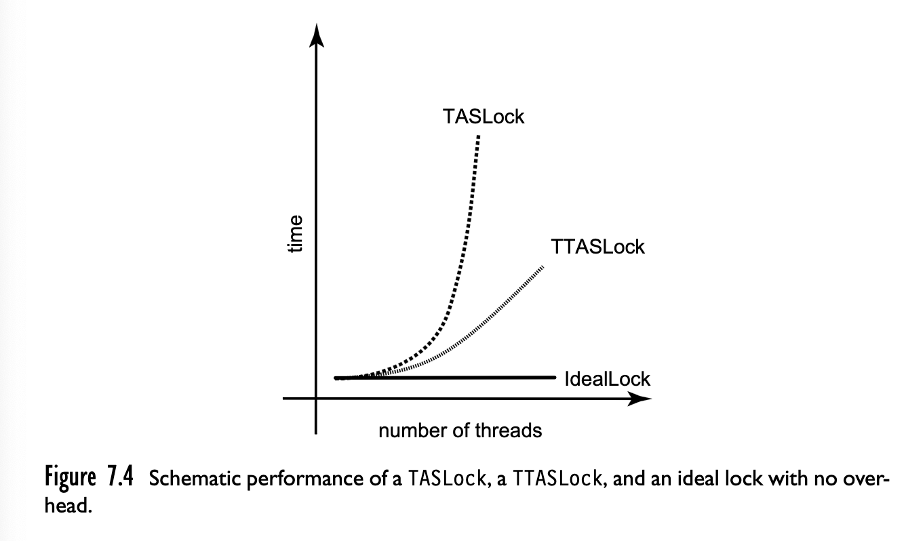

Introducción
Una forma de dividir a los sistemas informáticos es:
- Hardware (lo que se puede patear).
- Software específico (lo que sólo se puede putear).
Un sistema operativo es un intermediario entre ellos
Historia
- 1950: primeras computadoras comerciales
- el usuario armaba tarjetas perforadas en assembler o FORTRAN, un operador se encargaba de todo.
- problema: mucho tiempo de procesamiento desperdiciado.
- (más adelante) solución: sistemas batch. Hacías tarjeta -> cinta, cinta -> impresora.
- seguía habiendo un operador haciendo de intermediario entre usuario y hardware.
- más adelante, surge el concepto de multiprogramación, tratamos de usar el tiempo ocioso de un trabajo
j_1ejecutando otroj_2.j_1capaz tarda un poco más pero en total tardo menos.- también surge la idea de contención (dos programas queriendo acceder a un recurso a la vez)
- (después) surgen sistemas de timesharing, o sea conectar varias terminales a una misma computadora y darles un poco de tiempo de procesador a cada una.
Un S.O.
- Un SO es una pieza de software que hace de intermediario entre el HW y los programas de usuario.
- permite que el software específico no se preocupe con detalles de bajo nivel de HW
- permite que el usuario use correctamente el HW.
- Tiene que manejar cuestiones como la contención y la concurrencia de tal manera que:
- sea eficiente
- se haga correctamente
Sistema Operativo
Procesos
Un programa podemos definirlo como un texto escrito en un lenguaje de programación, o bien dicho código compilado a lenguaje máquina. Es estático. Ahora, cuando ese programa se ejecuta, pasamos a tener un proceso. Un proceso es la contracara dinámica del programa.
El estado de un proceso está representado por:
- los registros
- la memoria del proceso
- stack
- heap (o data section). En realidad el silverschatz lo separa en
- data section: variables globales
- heap: memoria dinámica
- el área de text: donde se almacena el código
Justamente los procesos son dinámicos ya que cambian su estado a medida que el programa ejecuta. Podemos entonces armar un diagrama de estados de un proceso:

- new: el proceso se está creando
- running: se están ejecutando instrucciones
- waiting: el proceso está esperando por un evento (I/O o recepción de alguna señal)
- ready: el proceso está en espera de ser asignado a un procesador
- terminated: el proceso terminó la ejecución
Modelo de procesos
El modelo de procesos que consideramos es un modelo de procesos secuenciales. Esto quiere decir que cada proceso piensa que tiene un único CPU propio. Sin embargo, en la realidad no es así. Como mencionamos anteriormente, la técnica de multiprogramación surgió como técnica para aprovechar el tiempo ocioso de ejecución de otros programas (ej: tienen que esperar I/O). Esto, junto a las ideas de timesharing (repartir el tiempo de procesador) caracterizan a este modelo, en donde si bien cada proceso cree que está asignado a un CPU de manera exclusiva, en realidad el sistema operativo es el encargado de asignara y retirar del cpu a los distintos procesos.
Ahora, si un proceso tiene un estado, pero no está constantemente en ejecución y tampoco es necesario que ejecute sobre el mismo CPU, necesitamos guardar en algún lado si estado. Cada proceso se representa en el sistema operativo con un PCB (process control block). Una PCB contiene:
- El estado actual del proceso
- El PC
- Registros del CPU (incluye flags del procesador): junto con el PC, es necesario guardar explícitamente la data cuando ocurren interrupciones.
- info para el scheduler, por ejemplo la prioridad del proceso
- info de manejo de memoria
- accounting info: estadísticas de tiempo de cómputo
- status de IO: tiene la lista de dispositivos de I/O asignados al proceso, los archivos abiertos, etc.
Threads
Una limitación de este modelo de cómputo es que asume que todo programa tiene un único flujo de ejecución. Sin embargo, la mayoría de programas realizxan varias tareas a la vez. Es por esto que se extiende este concepto de proceso para permitir que un proceso tenga varios threads de ejecución. En architecturas multicore cobra más importancia todavía porque en un core pueden correr varios threads en paralelo. En los sistemas que cuentan con PCB y threads, la PCB se extiende para que tenga información sobre cada thread. No solo eso, si no que en la práctica crear threads es menos costoso que crear nuevos procesos.
Árbol de Procesos
- Los procesos están organizados jerárquicamente, como un árbol.
- Cuando el SO comienza, lanza un proceso que se suele llamar init o systemd
- Cada proceso puede lanzar procesos hijos:
fork()es una llamada al sistema que crea un proceso igual al actual- el resultado es el PID del proceso hijo
- el padre puede suspender la ejecución hasta que un proceso (p ej. el proceso hijo) termine conociendo su PID con la syscall
wait() - cuando el proceso hijo termina, el código de estado indicado por el hijo se le devuelve al padre.
- el proceso hijo puede, o bien seguir ejecutando lo mismo que el proceso padre, o bien ejecutar algo distinto. Para eso puede usar la syscall
exec()para reemplazar su código binario por otro.
Por ejemplo, cuando lanzamos un programa desde la shell, el proceso de la shell hace un llamado a fork() y el proceso hijo hace exec() del programa que se desea ejecutar. El proceso de la shell espera hasta que el proceso hijo termine.
pstree es un comando que muestra los procesos actuales en forma de árbol. Si recibe un PID como parámetro, muestra el árbol a partir de ese proceso. Para más info man pstree
Actividades de un proceso
Vimos los distintos estados que puede tener un proceso en ejecución. Cuando un proceso está en ejecución, puede:
- hacer operaciones entre registros y direcciones de memoria
- llamadas al sistema operativo o syscalls (las vemos más adelante)
- I/O (por lo general mediante llamadas al sistema operativo) (las vemos más adelante)
Como mencionamos antes, un proceso no está todo el tiempo en ejecución (Uno si no podría esperar a que termine, pero y si el proceso se "cuelga"?). La pregunta es entonces por cuánto tiempo ejecuta? Ese tiempo lo llamamos quantum. En general hay 2 formas de administrar ese tiempo:
- cooperation: los procesos son los que "voluntariamente" detienen su ejecución para dar tiempo a otros procesos.
- preemption: los procesos tienen un tiempo limitado para ejecutar, y cuando este acaba el sistema operativo pasa el proceso al estado waiting y asigna el CPU a otro proceso. Lo importante de esto es que el proceso en ningún momento puede decidir si se puede quedar o no con un poco más de tiempo de CPU.
- este es el estándar de hoy día, y para implementarlo el SO se cuelga de la interrupción del reloj.
Pero en este segundo caso surgen las preguntas:
- cómo decide el OS a quién le toca y cuánto tiempo tiene?
- qué significa hacer que otro proceso se ejecute?
El Scheduler
Para responder las preguntas anteriores aparece el scheduler, un módulo del sistema operativo cuya función es decidir a qué proceso le corresponde ejecutar en cada momento.
Cuando el scheduler tiene que cambiar el programa que se ejecura en la CPU, primero tiene que:
- guardar los registros
- guardar el IP
- si es un programa nuevo, cargarlo en memoria
- cargar los registros correspondientes
- poner el nuevo IP
- algunas cosas extra que se explican más adelante
Para los pasos 1 y 2 usamos la PCB mencionada anteriormente, pero además tenemos una estructura más que es la PCT (Process Control Table), que en resumidas cuerntas es un diccionario / array de PCBs.
Esta serie de pasos se la conoce como cambio de contexto o context switch y no es gratis, por lo que el scheduler tiene que optimizar el tiempo que está haciendo context switch.
Actividades de un proceso - syscalls
- Un proceso también puede hacer llamadas al sistema (
fork(),exec(), etc.) - Desde el punto de vista del código, es un llamado a función (linkeada dinámicamente). Muchas veces incluso ni vemos la syscall propia, si no que los lenguajes nos abstraen de dichas actividades.
- esto de todos modos es más costoso que ejecutar código, ya que requiere de una interrupción, y a veces cambios de contexto.
- Por ejemplo, cuando uno en C++ hace
cout << "Hola Mundo\n";por detrás está realizando llamadas al sistema para escribir por salida estándar.
- En todos los casos se tiene que llamar a kernel (en linux se hace mediante una interrupción al handler
0x80, ahora directamentesyscall), y en varios casos es necesario cambiar el nivel de privilegio, contexto, interrupciones, etc.
Ejemplo usando syscall write (en x86-64):
global start
section .text
start:
mov rax, 1 ; write
mov rdi, 1 ; stdout
mov rsi, msg
mov rdx, 13
syscall
mov rax, 0x60 ; exit
mov rdi, 0
syscall
section .data
msg: db "Hello, world!"
El mismo ejemplo en C:
#include <unistd.h>
int main(int argc, char* argv[]) {
write(1, "Hello, world!\n", 14);
return 0;
}
API del SO
Las syscalls proveen una interfaz a los servicios del OS, también conocido como API del OS.
Existe hoy en día un estándar para la API de los OS basados en unix, llamado POSIX (Portable Operating System Infertace; X: UNIX). Define algunos servicios core que debe brindar el OS:
- Creación y manejo de procesos
- Pipes (lo vemos más adelante)
- Señales
- Operaciones de archivos y directorios
- Excepciones
- Errores del bus.
- Biblioteca C
- Instrucciones de E/S y de control de dispositivo (ioctl).
I/O
Por último, mencionamos que dentro de las cosas que un proceso puede hacer, una es operaciones de I/O (Entrada y Salida).
Si hay algo que caracterizan las entradas de I/O es que son muy lentas. Entonces, cuando un proceso necesita hacer I/O tiene algunas opciones:
- quedarse esperando (busy waiting)
- polling (que el proceso consulte cada tanto si la operación se completó o no) (es como una forma de busy waiting, pero tranquilamente el proceso puede hacer algo más mientras consulta a ver si terminó la I/O)
- interrupciones: cuando pedís I/O te saco y te vuelvo recién a meter cuando se completó la operación
- Otras que no vemos
Además, podemos caracterizar en 2 el tipo de operaciones (aplica a I/O) pero puede ser en general:
- bloqueante: hago el "inicio de la operación" (ya sea con una syscall o no) y el proceso no recibe de vuelta el control/ se bloquea hasta que la operación termina
- no bloqueante: hago la syscall, y retorna de inmediato. Sin embargo, no significa que la operación terminó. Si no que tengo que enterarme de alguna manera que la operación terminó.
En otros contextos también se usa la idea de bloqueante vs no bloqueante para esa idea de me bloqueo hasta que termina una operación vs. consulto yo a ver cuándo termina y mientras tanto hago algo más.
Si recordamos, en la PCB se guardaba el estado de un proceso. Pero además de eso también se guarda información relevante para el scheduler como la prioridad del proceso y la lista de recursos por los que está esperando.
Señales
Es un mecanismo presente en los sistemas POSIX que permiten notificar a un proceso la ocurrencia de un evento. Un proceso tiene al igual que el SO, handlers para las distintas señales. Cuando recibe una, la ejecución del proceso se detiene y se ejecuta el handler correspondiente.
Algunas señales conocidas son SIGINT, SIGKILL, SIGSEGV, SIGSTOP, entre otras.
Intercomunicación Entre Procesos (IPC)
La comunicación entre procesos es parte fundamental de muchas piezas de software de hoy en día, ya sea entre procesos de un mismo equipo o entre procesos remotos. Se usa en contextos donde se busca/tiene:
- Mejorar la velocidad de procesamiento
- Modularizar funcionalidad (hoy en día el software es grande y complejo)
Originalmente (e incluso hoy en día), los browsers tenían un único proceso. Esto trae algunos problemas, por ejemplo que si un sitio se "cuelga", se te cuelga todo el browser.
Chrome en cambio crea 3 tipos de procesos:
- Browser: administra UI, acceso a disco y a red.
- Renderer: muestra las páginas, se encarga de procesar html y javascript. Se instancia un nuevo proceso Renderer por sitio.
- Plug-in: Proceso para cada tipo de plugin.

Más info en la documentación de chromium
Tipos de IPC
Hay distintas formas de realizar IPC:
- memoria compartida
- algún recurso compartido (ej: archivos)
- pasaje de mensajes (nos vamos a concentrar en este más que nada)

Los SO brindan distintas apis para hacer IPC. Por ejemplo:
- Unix SySV Transport Layer Interface
- BSD Sockets (En linux fue el que terminó ganando)
- idea:
- Dame un agujero en la pared
- Uní mi socket con el de este proceso
- tengo
open(),read(),write()(similar a un archivo)
- idea:
A los ojos de un proceso, hacer IPC es como hacer E/S. Los detalles los esconde todos el SO.
Pipes
Son un "pseudo archivo" que por debajo es una forma de IPC. Tenemos:
- Ordinary pipes (como los que usamos en la terminal):
ls -l | grep so - Named pipes:
mkfifo -m 0640 /tmp/mituberia
IPC Sincrónico/Asincrónico
- Síncrona (ej TCP):
- El emisor no termina de enviar hasta que el receptor no recibe.
- Si el mensaje se envió sin error suele significar que también se recibió sin error.
- En general es bloqueante.
- Asíncrona (ej UDP):
- El emisor envía y "en algún momento le llegará".
- suele requerir algún mecanismo adicional para saber si llegó el mensaje
- no bloquea al emisor (salvo capaz para copiar el mensaje a un buffer del SO o desde un buffer)
Scheduling
La política de scheduling es una parte fundamental y distintiva del SO. Una mejor política de scheduling impacta fuertemente en el rendimiento y funcionamiento de un SO, es por eso que gran parte de los esfuerzos en optimizar un SO pasa por mejorar la política de scheduling. Sin embargo, para hablar de optimización tenemos que saber qué optimizar y qué métricas usamos.
- Ecuanimidad (fairness): que los recursos del procesador se repartan equitativamente.
- Eficiencia: tengo que maximizar el tiempo que la CPU está ocupada ejecutando "cosas útiles". Por ejemplo, no está bueno dar un quantum chico porque gasto mucho tiempo en context switches.
- Carga del sistema: minimiza la cantidad de procesos listos a la espera de ser ejecutados. O sea tener muchos procesos listos y no ejecutando = malo.
- Tiempo de respuesta: minimizar el tiempo de respuesta percibido por los usuarios interactivos.
- Latencia: minimizar el tiempo requerido para un proceso para que empiece a mostrar resultados.
- Rendimiento / Throughput: maximizo #procesos terminados por unidad de tiempo.
- Liberación de recursos: hacer que terminen cuanto antes los procesos que consumen muchos recursos.
Obviamente no puede tener todo, y cada SO hace un balance y prioriza de maneras distintas.
Para el resto de la info, vamos a asumir que tenemos un único procesador. Pero esto se generaliza a más procesadores en donde el scheduler ahora también tiene que decidir a qué procesador mandar cada proceso. Eso agrega nuevas consideraciones como por ejemplo el costo de mover un proceso de un procesador a otro (por cuestiones de localidad de memoria por ejemplo).
El procesador como una sala de espera
- La analogía y modelo que se usa es el de colas. El scheduler mantiene una ready queue con los procesos listos que tiene para mantener. En general por debajo la ready queue es una lista enlazada en donde cada nodo apunta a la PCB correspondiente.
- Entonces distintos tipos de colas van a cambiar el funcionamiento del scheduler.
- Un primer enfoque es el de una simple cola FIFO, pero trae el problema de que estaríamos tratando a todos los procesos de la misma manera. No es lo mismo un proceso que requiera mucha CPU (cpu-bound) a uno que no (por ejemplo un proceso I/O-bound).
- Para eso podemos resolverlo agregando prioridades al modelo.
- Siguiente problema: inanición (starvation). Los procesos de mayor prioridad están constantemente "ganando" tiempo de CPU y traba a los de menor prioridad
- Posible solución: a medida que un proceso "envejece", le aumento la priordad.
- Otro enfoque: round robin, o sea darle un cachito de tiempo a cada proceso.
- cuánto quantum les doy?
- Si es muy largo, los procesos "interactivos" dejarían de verse como tales.
- Si es muy corto, tengo mucho context switch
- cuánto quantum les doy?
- Qué hago? Combino ambos enfoques: round robin + prioridades.
- además se le suele dar un poquito más de prioridad a los procesos IO bound dado que no requieren tanto tiempo de CPU y liberan rápidamente su lugae.
Además de la ready queue, el OS tiene otras colas. Recordemos que podemos tener operaciones de I/O, o procesos a la espera de algún evento (ej: esperar a que un proceso hijo termine). En dichos casos, los procesos tienen que esperar a que esa operación termine (por lo general es mucho más lenta que el resto de las operaciones en CPU), entonces el scheduler puede mover el proceso a una wait queue
Múltiples colas
Esto extiende el modelo anterior. Cada cola representa el quantum que se le otorga a los procesos de dicha cola. Y las de menos quantum tienen mayor prioridad. Además, el scheduler puede decidir mover al proceso de cola.
Scheduling en sistemas batch
- Se suele usar la estrategia Shortest Job First.
- Apunta a maximizar el throughput.
- En general en estos sistemas se puede predecir el tiempo que tarda el trabajo
- Cuando conocés las duraciones de antemano, esta estrategia es óptima respecto a la latencia promedio.
- alternativa: pensar cuánto tiempo falta hasta hacer E/S nuevamente
- cómo predicen el tiempo en CPU? Uso info del pasado (estadísticas).
Scheduling en real time
Cuando hablamos de sistemas real time nos referimos a la predictibilidad del mismo. Esto quiere decir que las tareas/procesos tienen deadlines estrictos, por lo general presente en sistemas críticos. O sea no cumplo deadline = MALO. No vimos mucho de esto pero mencionamos 2 alternativas:
- scheduling cooperativo
- Earliest Deadline First
Scheduling en SMP
Ahora si en este contexto tenemos un sistema multiprocesador. El problema principal del scheduling en estos sistemas es la caché. Como dijimos antes, mover un proceso a otro procesador puede implicar perder la data que ya teníamos en cache. Se introduce en estos casos el concepto de afinidad al procesador para incentivar a que se use el mismo procesador.
- Decimos que la afinidad es dura si se tiene que respetar a rajatabla (siempre al mismo procesador).
- Si no es afinidad blanda
Nuevas arquitecturas permiten al CPU acceder a los espacios de memoria de otros CPUs. Sin embargo, esto tiene un costo extra por lo que sigue siendo mejor el acceso a la memoria local del CPU. También sigue existiendo el problema de la cache, con lo cual es una mejora pero no es una solución, si no una herramienta extra.

En lugar de usar una cola, se tiene un ABB donde la clave es el tiempo en ejecución para la "ready queue". Luego, en log #Procesos se puede obtener el siguiente a ejecutar.

Sincronización entre procesos
Intro bla bla... PAPER Shan Lu et al. Learning from Mistakes - A Comprehensive Study on Real World Concurrency Bug Characteristics. ASPLOS'08
Sección Crítica (CRIT)
Es un cacho de código tal que:
- sólo hay (o debería haber) un proceso a la vez en CRIT.
- todo proceso que esté esperando entrar a CRIT va a entrar eventualmente.
- Ningún proceso fuera de CRIT puede bloquear a otro.
A nivel código se implementa con dos llamados: uno para entrar y otro para salir de la CRIT. Si implementamos exitosamente secciones críticas, los procesos pueden compartir datos sin tosquearse.
Implementando secciones críticas
Una alternativa es usar locks. Son como booleanos compartidos. Cuando entro a la CRIT lo pongo en 1, al salir en 0. Si está en 1 espero a que tenga un 0.
El problema de que el scheduler nos cague puede seguir ocurriendo (primero checkeo el bool, después me suspenden el proceso). Por lo general nos remitimos a soluciones que usan el HW.
TAS
El Hw suele proveer alguna instrucción que permite settear atómicamente el valor de un booleano/entero en 1. Nosotros la vamos a llamar TestAndSet.
fn TestAndSet(variable) {
old_value = variable.value
variable.value = 1
return old_value
}
Pero además toda la operación se realiza de forma atómica, o sea de forma indivisible sin importar que tengamos varias CPUs.
En x86 tenés la operación bts que te permite settear el flag de carry y un bit de un registro. Y esa operación si se le agrega el prefijo lock hace que se ejecute de manera atómica. O sea lock bts <registro> <nro_de_bit>
Usando TAS
boolean lock;
while(TRUE) {
while (TestAndSet(&lock)) {
// devuelve true si estaba lockeado. No hago nada
}
// devolvió FALSE, estoy en la sección crítica (recordar que después del check pasa a ser TRUE el valor del lock);
// hago lo que necesite la sección crítica
// salgo de la sección crítica
lock = FALSE;
// acá puedo hacer todo lo que no tenga sección crítica
}
Alternativa: Sleep
Una alternativa podría ser agregar un sleep adentro del while. Y cuando falla el intento de obtener el lock suspender el proceso durante un tiempo. La cuestión es cuánto tiempo?
- Si es mucho, pierdo tiempo (y alguien puede "robarme el lugar").
- Si es poco, sigo desperdiciando CPU (menos que antes though).
- Y si le pido al SO que me deje seguir cuando esté liberado el lock?
Problemas con sleep: Problema del Productor-Consumidor
- Un proceso mete elementos a un buffer (Productor), otro los retira (Consumidor).
- Nuevamente hay contención de recursos. Pero además hay un problema adicional, qué pasa si
- se llenó el buffer y el productor quiere meter cosas
- se vació el buffer y el consumidor quiere sacar cosas
- En ambos casos la respuesta es esperar
Seguro que busy waiting nos alcanza, y si usamos sleep/wakeup?
De vuelta estamos atados a la traza de ejecución. Como el chequeo de la capacidad del buffer y el sleep/wakeup no es atómico de por sí, puede pasar que el consumidor reciba el wakeup antes de usar el sleep, y después haga el sleep. Si por ejemplo el buffer es de un único elemento, puede pasar que se cuelgue el sistema.
Semáforos: la true way
Un semáforo es una variable entera con las siguientes características:
- se puede inicializar con cualquier valor
- tiene 2 operaciones:
wait()signal()
wait(s): while (s <= 0) sleep(); s--;signal(s): s++; if (X espera por s) wakeup(X)- Ambas se implementan de forma tal que su ejecución sea atómica (sin interrupciones en realidad)
- Caso particular:
mutex = lock = semáforo inicializado en 1
Una posible implementación del mismo problema anterior pero usando semáforos:
semaforo mutex = 1;
semaforo llenos = 0;
semaforo vacios = N; // Capacidad del buffer
fn productor() {
while(true) {
item = producir_item();
// Entrando a zona crítica
wait(vacios);
wait(mutex);
agregar(item, buffer);
cant++;
signal(mutex);
signal(llenos);
}
}
fn consumidor() {
while(true) {
wait(llenos); // espero a que "me despierten"
wait(mutex); // acceso exclusivo al buffer
item = sacar(buffer);
cant--;
signal(mutex); // libero el buffer
signal(vacios); // incremento la "capacidad del bufer" trackeada por el semáforo. si estaba lleno (vacios = -1) ahora pasa a 0 y despierta al productor
hacer_algo(item); // zona no crítica
}
}
Esto está muy lindo, pero ojo. Tan sólo invertir el orden de los wait/signal puede resultar en una situación en la que ambos se quedan esperando. Por ejemplo, si consumidor se implementara de la siguiente manera:
fn consumidor() {
wait(mutex);
wait(llenos);
// ... El resto igual
}
Imaginemos que :
- el consumidor ejecuta primero y le toca hacer
wait(mutex)(adquiere el mutex) - luego hace
wait(llenos);y se queda esperando porque por ahora está en 0 - luego ejecuta el productor, y hace
wait(vacios)exitosamente pero al hacerwait(mutex)se va a quedar esperando porque el mutex ya estaba bloqueado por el consumidor.
Esta situación en la que se da una dependencia de recursos cíclica entre procesos se llama deadlock, y es uno de los grandes problemas que surgen en la concurrencia manifestándose en todo tipo de sistemas.
Volviendo al siglo 21...
Hoy en día la mayoría de lenguajes de alto nivel proveen interfaces para implementar secciones críticas y manejo de concurrencia. Por ejemplo con:
- bool atómicos
- int atómico
- colas atómica
Spin locks
Basándonos en el diseño que vimos de bools atómicos vamos a construir una serie de locks. El primero de ellos es el mutex llamado TASLock, o spin lock.
atomic<bool> reg;
fn create() { reg.set(false); }
fn lock() { while(reg.testAndSet()) {} }
fn unlock() { reg.set(false); }
Ejemplo de uso:
TasLock mutex;
int donar(int donacion) {
int res;
// inicia sección crítica
mutex.lock();
fondo += donacion;
mutex.unlock();
// Fin sección crítica
// inicio de otra sección crítica
mutex.lock();
res = ticket; ticket++;
mutex.unlock();
// Fin de la sección crítica
return res;
}
Algunas observaciones sobre el TASLock:
- todo
lock()necesita suunlock(), no hay que olvidárselo. - usa busy waiting, ya dijimos que era menos malo.
- esto igual depende, hay que comparar el overhead vs semáforos que tampoco son gratis
- podemos minimizar el costo: en vez de usar
testAndSet()de una, chequeás el valor de la variable antes de intentar (la operación es más barata).- Al implementar eso obtenemos un TTasLock
Ejemplo del TTasLock:
bool mutex;
fn create() { mutex.set(false); }
fn lock() {
while(true) {
while (mutex.get()) { // true == ta lockeado }
if (!mutex.testAndSet()) return; // si da falso => no estaba lockeado y yo obtuve el lock, si no vuelvo a loopear
}
}
fn unlock() { mutex.set(false); }
Surge la natural pregunta: Cuánto mejora?

Otro tipo de operaciones atómicas
Entero atómico
atomic int getAndInc() { //... }
atomic int getAndAdd(int v) { //... }
atomic int compareAndSwap(T u, T v) { //... } // Esta operación compara el contenido con u y si es igual lo cambia por v (devolviendo u)
Cola
atomic enqueue(T item) { // Uso lock para asegurar acceso exclusivo; }
atomic dequeue(T *pitem) { // Uso lock para asegurar acceso exclusivo; }
Locks recursivos
El siguiente código genera deadlock:
fn f() {
mutex.lock();
f();
mutex.unlock();
}
El siguiente también, cuando cada proceso ejecuta la primer linea (cada uno adquiere un lock nomás):
fn proceso_1() {
mutexA.lock();
mutexB.lock();
// ...
}
fn proceso_2() {
mutexB.lock();
mutexA.lock();
// ...
}
Solución: Mutex reentrante o recursivo
Esquema de implementación V1, un mutex con un atomic int:
int calls;
atomic<int> mutex;
fn create() { mutex.set(0); }
fn wait() { while(!mutex.testAndSet(1)) {} }
fn signal() { mutex.set(0) }
Esquema V2, ahora si reentrante:
int calls;
atomic<int> owner;
fn create() { owner.set(-1); calls = 0; }
fn lock() {
if (owner.get() != self) {
while(owner.compareAndSwap(-1, self) != self) // en alguna call lo adquiere y en la siguiente el compareAndSwap devuelve self
}
calls++;
}
fn unlock() {
if (--calls == 0) owner.set(-1);
}
Esquema V3, ahora si con local spinning:
int calls;
atomic<int> owner;
fn create() { owner.set(-1); calls = 0; }
fn lock() {
while (true) {
while (owner.get() != -1 and owner.get != self) {}
if(owner.compareAndSwap(-1, self) == self) { break; }
}
calls++;
}
fn unlock() {
if (--calls == 0) owner.set(-1);
}
Condiciones de Coffman
Postula una serie de condiciones necesarias para la existencia de un deadlock:
- Exclusión mutua: Un recurso no puede estar asignado a más de un proceso.
- Hold and wait: Los procesos que ya tienen algún recurso pueden solicitar otro.
- No preemption: No hay mecanismo para quitarle los recursos a un proceso por la fuerza
- Espera circular: tiene que haber un ciclo de N >= 2 procesos tal que \(P_i\) espera un recurso que tiene \( P_{i+1} \)
Uno puede plantear un modelo con un grafo bipartito en donde tengo:
- Los nodos son procesos y recursos
- agrego un eje de un nodo de proceso a uno de recurso si el proceso solicitó el recurso
- agrego un eje de un recurso a un proceso si el proceso adquirió el recurso
- bajo este modelo tener un ciclo en el grafo es equivalente a tener un deadlock
Problemas de sincronización
Mencionamos 1 tipo explícito de problemas pero hay varios:
- Deadlock: ya lo vimos
- Race condition: el acceso concurrente a un mismo recurso nos puede dejar en un estado inválido.
- Starvation: también conocido como inanición, es cuando un proceso se "consume todos los recursos" y no le permite a otros "avanzar". Por ejemplo, un proceso que siempre "gana" la zona crítica y los otros siempre tienen que esperar. Es un problema en sí mismo, cómo aseguro que todos los procesos eventualmente puedan acceder a la zona crítica si lo requieren?
Para tratar estos problemas tenemos algunas herramientas, pero no hay un "one size fits all":
- patrones de diseño (o sea usar lo que ya sabemos que anda bien y no tiene problemas de concurrencia)
- reglas de programación (ej: pido locks en X orden y los libero en Y orden)
- Prioridades: para evitar Starvation
- Protocolo (similar a patrones de diseño, uso cosas que se que funcionan y no reinvento la rueda)
Para detectar estos problemas hay algunas técnicas aunque hasta el día de hoy no hay un algoritmo que pueda detectar cualquier tipo de problema de concurrencia:
- análisis de programas
- estático
- dinámico (profiling por ejemplo)
- en tiempo de ejecución
- preventivo (antes de que ocurra)
- recuperación (deadlock recovery. Por ejemplo las bases de datos tienen que hacer esto y abortar transacciones)
Sincronización: Razonamiento y problemas clásicos
El problema de los turnos
Tenemos una serie de procesos ejecutando en simultáneo \( P_i, i \in [0, \dots, N-1] \). Cada proceso tiene que imprimir "Soy el proceso \( i \)", y queremos que se haga en orden. (podría ser realizar cualquier tarea en realidad, lo importante es la constraint de orden).
Podemos pensar en una solución como la siguiente:
// Semáforos. Tengo 1 por cada proceso (y uno extra)
semaphore sem[N+1];
// Inicialización
fn init() {
for i in 0..N+1 {
sem[i] = 0; // blockeado
}
for i in 0..N+1 {
spawn P(i);
}
sem[0].signal()
}
// Proceso i
fn P(i) {
// Esperar turno
sem[i].wait();
// Ejecutar
print("Soy el proc {:i}");
// Avisar al próximo
sem[i+1].signal();
}
El programa es correcto? Cómo demuestro correctitud en un código concurrente? Tengo tripla de hoare, teorema del invariante, especificación y esas cosas?
Razonando en paralelo/concurrente
Modelo: \( \tau = \tau_1, \dots \) donde los \( \tau_i \) son diferentes estados del programa.
En programas paralelos correcto ya no significa lo mismo, ahora la correctitud pasa por verificar que ciertas propiedades se cumplen sobre cualquier ejecución (o sea, para cualquer scheduling posible).
Qué tipo de propiedades tengo?
Vamos a tener:
- propiedades de safety: o sea nada malo ocurre.
- ej: ausencia de deadlock, exclusión mutua, no hay pérdida de mensajes, los relojes no se desvían a más de \( \delta \) unidades de tiempo.
- propiedades de progreso/liveness: en algún momento algo "bueno sucede". Suele dar esa idea de que si tengo cosas que quiero que se ejecuten siempre estoy en posición de llegar al punto en que se ejecutan.
- ej: "si aprieto el botón, eventualmente se llama a su callback", vendría a ser como que eventualmente el sistema responde a los estímulos.
Las propiedades de safety de alguna forma son "opuestas" a las de livenes. En qué sentido? Bueno, las propiedades de safety son algo que tienen que valer para toda ejecución, eso significa que cuando no se cumple es porque hay una ejecución en donde llego a que esa cosa mala ocurre. Eso a su vez implica que tengo una ejecución finita, o contraejemplo. Entonces si quiero probar que vale, asumo que no, obtengo un "contraejemplo" e intento llegar a un absurdo. Y si quiero probar que no vale alcanza con buscar el contraejemplo.
Por otro lado las propiedades de safety ocurre al revez. Suponer que no vale significa que sin importar la ejecución siempre tengo un camino que no llega (o sea tengo potencialmente una cantidad infinita de ejecuciones "infinitas"). Acá es al revés, para trabajar con cosas finitas lo demuestro "directo"
Una propiedad muy común es la de fairness. Se basa en la idea de que los procesos reciban su turno (para ejecutar, para ingresar a una sección crítica, etc.) con infinita frecuencia. En criollo, no ocurre que un proceso siempre quede postergado ad infinitum. Hay 3 tipos de fairness:
- incondicional: el proceso se ejecuta regularmente si siempre está habilitado.
- Fuerte: el proceso se ejecuta regularmente si está habilitado con infinita frecuencia (puede tener períodos de inhabilitación).
- Débil: el proceso se ejecuta regularmente si está continuamente habilitado a partir de cierto punto
En general, suponemos que fairness está dado por default y usamos eso para probar otras propiedades (generalmente liveness: porque puedo asumir que va a recibir turnos y va a "poder avanzar")
Modelo Formal
Para trabajar con estas propiedades se utilizan lógicas temporales. En particular nosotros no vemos demostraciones si no mas bien argumentaciones de que las propiedades se cumplen.
Otro problema clásico: Rendezvous
- tengo procesos \( P_i, i \in [0, \dots, N - 1] \)
- la propiedad a demostrar es la propiedad BARRERA:
\[ b(j) \text{ se ejecuta después de todos los } a(i) \]
- observación: no impongo ninguna restricción sobre el orden de los \( a(i) \) ni los \( b(i) \).
Modelo Formal V2.0
Usamos un modelo propuesto en el libro de Nancy Lynch:

- Estado: \( \sigma : [ 0, \dots, N - 1 ] \rightarrow \lbrace \text{REM}, \text{TRY}, \text{CRIT}, \text{EXIT} \rbrace \)
- Transición: \( \sigma \rightarrow^{l} \sigma' , l \in [ 0, \dots, N - 1 ] \rightarrow \lbrace \text{REM}, \text{TRY}, \text{CRIT}, \text{EXIT} \rbrace \)
- Ejecución: \( \tau = \tau_0 \rightarrow^l \tau_1 \dots \)
Algunas propiedades bajo el modelo formal
-
WAIT-FREEDOM
- idea: "Todo proceso que intenta acceder a la sección crítica, en algún momento lo logra, cada vez que lo intenta"
- fórmula: \( \forall \tau, \forall k, \forall i, \tau_k(i) = \text{TRY} \implies \exists k' > k \land \tau_{k'}(i) = CRIT \)
-
FAIRNESS
- en castellano: "Para toda ejecución y proceso, si el proceso puede hacer una transición (la mismoa) en una cantidad infinita de estados de la ejecución, entonces existe un momento en el que hace la transición"
- fórmula: \( \forall \tau, \forall i, | \lbrace \tau' : \tau \rightarrow \dots \tau' \rightarrow^{l_i} \tau'' \rbrace | = \infty \implies \exists k, \tau_k \rightarrow^{l_i} \tau_{k+1} \)
-
EXCL
- idea: "Para toda ejecución y estado , no puede haber más de un proceso tal que ambos estén en estado CRIT"
- fórmula:
\[ \text{EXCL} \equiv \square \text{#CRIT} \leq 1 \]
-
LOCK-FREEDOM
- idea: para toda ejecución y estado, si hay un proceso en estado TRY y ninguno en CRIT, entonces eventualmente algún proceso está en CRIT (capaz el que estaba en TRY le ganaron de mano, pero alguno entra)
- fórmula: \( \square ( \text{#TRY} \geq 1 \text{#CRIT} = 0 \implies \diamond \text{#CRIT} > 0 ) \)
-
STARVATION-FREEDOM
-
predicados auxiliares:
- IN: si un proceso está en try, eventualmente está en crit
\[ \text{IN}(i) \equiv i \in \text{TRY} \implies \diamond i \in \text{CRIT} \]
- OUT: si un proceso está en la zona crítica, eventualmente sale de la zona crítica
\[ \text{OUT}(i) \equiv i \in \text{CRIT} \implies \diamond i \in \text{REM} \]
-
idea: Si todo proceso eventualmente sale de la zona crítica, entonces todo proceso eventualmente entra a la zona crítica
-
fórmula: \( \forall i. \text{OUT}(i) \implies \forall i. \text{IN}(i) \)
-
Podemos reescribir WAIT-FREEDOM usando el predicado IN:
\[ \text{WAIT-FREEDOM} \equiv \forall i. \square \text{IN}(i) \]
-
SCM (sección crítica de a M procesos)
- idea: puedo tener hasta M procesos en la sección crítica (esto por ejemplo aplica cuando tengo semáforos)
- fórmula:
\[ \begin{align} \forall \tau. \forall k. \\ \text{1) #}& \lbrace i | \tau_k(i) = CRIT \rbrace \leq M \\ \text{2) #}& \forall i. \tau_k(i) = TRY \land \text{#}\lbrace j | \tau_k(j) = CRIT \rbrace < M \\ &\implies \exists k' > k. \tau_{k'}(i) = CRIT \end{align} \]
Problema Lectores/escritores
-
esto lo vemos en bases de datos (cuando vemos logging, manejo de transacciones, y errores/aborts)
-
tengo una variable compartida
-
los escritores necesitan acceso exclusivo, los lectores pueden leer al mismo tiempo
-
propiedad SWMR (Single-Writer/Multiple-Readers)
\[ \forall \tau \forall k. \exists i. writer(i) \land \tau_k(i) = \text{CRIT} \implies \forall j \neq i. \tau_k(j) \neq \text{CRIT} \\ \forall \tau. \forall k. \exists i. reader(i) \land \tau_k(i) = \text{CRIT} \implies \\ \forall j \neq i. \tau_k(j) = CRIT \implies reader(j) \]
- El primer predicado fuerza que si un proceso está escribiendo no hay otros procesos en la sección crítica
- El segundo predicado dice que si hay un proceso leyendo, entonces cualquier otro proceso que también esté en la sección crítica tiene que estar leyendo (y por ende no escribiendo. (El anterior lo inmplica en realidad)
Solución y análisis al problema
Uso 2 semáforos y un contador:
semaphore wr = 1;
// Nota: este semáforo lo uso como mutex para
// obtener acceso exclusivo a `readers`
semaphore rd = 1;
int readers = 0;
fn writer(i) {
// TRY
wr.wait();
// CRIT
write();
// EXIT
wr.signal();
}
fn reader(i) {
// TRY
rd.wait();
readers++;
if readers == 1 {
wr.wait();
}
rd.signal();
// CRIT
read();
// EXIT
rd.wait();
readers--;
if readers == 0 {
wr.signal();
}
rd.signal();
}
Es esta implementación correcta? A simple vista uno diría que sí, pero en realidad no. Los procesos escritores pueden llegar a quedarse bloqueados permanentemente si por ejemplo hay constantemente lectores entrando a la sección crítica. En ese caso nunca "libero" el lock del writer y por más de que puede estar infinitamente disponible nunca le llega su turno. O sea puede haber inanición.
Problemas adicionales
- filósofos que cenan
- N filósofos en una mesa redonda, con tenedores (compartidos) a sus lados
- tengo que programar las funciones
tomar_tenedores(filo_i)ysoltar_tenedores(filo_i)satisfaciendo:- EXCL-FORK: tenedores de uso exclusivo
- WAIT-FREEDOM: sin deadlock
- STARVATION-FREEDOM: no inanición
- EAT: Más de un filósofo puede comer a la vez (variante de SCM)
- nota de color: hay un resultado general que dice que NO existe una solución en la que todos los filósofos hacen lo mismo
- una solución es hacer que todos salvo uno agarren el de la izquierda primero y el restante agarra a la derecha primero.
- demo para ver que no hay deadlock: agarrá el grafo de las condiciones de cauffman, cuáles son los potenciales ciclos. Cuándo ocurre que hay deadlock? Puede ocurrir con el código actual?
Uno podría preguntarse: "Por qué tengo que definir EAT? Si no restrinjo nada claramente permito que varios filósofos puedan comer a la vez." Creo que la respuesta a eso es que tener definido EAT nos da información extra y es útil sobre todo para evaluar si nuestro algoritmo es correcto, ya que puedo ver el código y encontrar algún contraejemplo de que eso no se cumple. Si no tengo el predicado nunca tengo contra qué comparar.
- El barbero
- 1 único barbero
- una sala de espera con N sillas + la sala del barbero (cap. 1 persona)
- cuando no hay clientes el barbero duerme
- cuando entra un cliente
- no hay lugar? => se va
- hay lugar? entra y despierta al peluquero si está dormido
- potencial impl:
- un semáforo para despertar al barbero (y para que se vuelva a dormir cuando no quedan clientes)
- un semáforo para hacer pasar al cliente a la silla del barbero
- un contador atómico para contar clientes y ver que no nos pasamos de la capacidad
Administración de Memoria
Vamos a estudiar un subsistema presente en la mayoría de OS: el manejador de memoria (MMU). Se encarga de:
- manejar el espacio libre/ocupado
- asignar y liberar memoria
- controlar swapping
- permisos maybe?
Cuando tenemos un único proceso en memoria todo es mucho más sencillo porque lo tengo en memoria mientras viva el programa. Una vez que introducimos multiprogramación necesitamos hacer algo con la memoria de un proceso que es desalojado. Para eso se usa la técnica de swapping que consiste en pasar a disco la memoria de procesos que no se estén ejecutando. Eso es muy lento (hay que copiar toda la memoria a disco)... y si tratamos de ser golosos y dejamos ambos procesos en memoria?
De todos modos estamos pateando el problema a futuro. Si en algún momento no me entra nada más definitivamente tengo que mandar algún proceso a disco. Ahora, supongamos lo siguiente:
- proceso es desalojado
- nuevo proceso es introducido, ocupando el cacho de memoria recién liberado
- el proceso antes desalojado tiene que volver a ejecutarse, pero ya pisé el espacio de memoria que tenía asignado. Le asigno el nuevo espacio con direcciones distintas?

En ese caso tenemos algunas alternativas:
- divido y "fijo" bloques de memoria (o sea una vez que te toca un bloque de memoria no te pueden mandar a otro)
- Esto es malo por muchos motivos, sobre todo porque así solo no resuelve el problema anterior
- cada vez que meto y saco un proceso, reescribo las direcciones de los accesos a memoria
- mucho muy caro
- la solución que es usada en la práctica es una mezcla entre las primeras 2:
- para un proceso, las direcciones de memoria son siempre las mismas
- voy a acomodar las direcciones de los accesos a memoria, pero en lugar de modificar el código alcanza con tener un registro que haga de base.
Por otro lado hay algunos problemas más que no mencionamos:
- cómo sabe el OS qué bloques de memoria están libres?
- cómo sabe dónde conviene ubicar un proceso?
- cómo hago para que un programa no pueda acceder a la memoria de otro?
Estos problemas se los conoce como:
- Reubicación (cambio de contexto y swapping)
- Protección (memoria privada de los procesos)
- Manejo del espacio libre (evitar fragmentación)
Fragmentación
Ocurre cuando tenemos suficiente memoria para los pedidos de memoria pero en ningún caso es continua.
Tipos de fragmentación
Hay 2 tipos de fragmentación:
- fragmentación externa: tengo bloques libres pero son chicos y dispersos
- fragmentación interna: desperdicio espacio dentro de los propios bloques (p. ej, si sólo asigno bloques de tamaño potencia de 2)
Solucionando problemas de fragmentación
Si bien se puede usar un proceso de "compactado", dicho proceso es muy costoso como para hacer en un SO RT. En cambio la memoria se divide:
- por segmentos
- por páginas
Ambos casos son bloques de igual tamaño, pero cumplen distintas funcionalidades. Los segmentos separan memoria dentro de un proceso según su "propósito". En cambio las páginas son las unidades "indivisibles" de memoria que se le asignan a los procesos.
Una alternativa es dividir todo en bloques y usar un bitmap para trackear qué bloques están libres y cuáles ocupados. Pero tiene problemas porque no es fácil encontrar bloques consecutivos y el tamaño del bitmap te determina la granularidad de los bloques de memoria, lo cual no siempre se llevan bien.
Otra alternativa que si es usada es usar listas enlazadas, donde cada nodo es un proceso o bloque libre. En ese caso liberar es barato, asignar es fácil una vez que decidí dónde.

Políticas de asignación
- First Fit: asigno el primero que veo que entra.
- es rápido, pero tiende a fragmentar la memoria.
- el allocator de 4.2BSD usa esta dentro del conjunto de políticas
- Best fit: me fijo dónde entra con menos desperdicio
- más lento
- al contrario de lo esperado, no es tan bueno respecto a fragmentación porque llena la memoria de pequeños cachitos inutilizables
- variante Quick Fit: Mantengo una lista de los bloques libres de tamaños más frecuentemente utilizados
- también usado en el allocator de 4.2BSD
- buddy system
- usa splitting de bloques
- restringe que todos los bloques sean de tamaño potencia de 2
Reubicación
Se parece al problema de "Tengo un programa de tamaño \( M \) que no necesita más de \( K \) bytes a la vez. Sólo tengo \(N < M\) bytes disponibles. Debería poder correr el programa, pero cómo? Combinamos 2 técnicas. El ya mencionado swapping, y virtualización del espacio de memoria. Haciendo uso de la MMU (del hardware, no del SO), traducimos las direcciones virtuales a las correspondientes direcciones físicas.

Comparación memoria virtual
| Sin memoria virtual | Con Memoria Virtual | |
|---|---|---|
| Espacio de direcciones | tamaño de la memoria física (si la ram es de 4 GB, no puedo direccionar a más que eso) | tamaño de la memoria física + swap (acá hace la diferencia) |
| Obtener una celda | Obtengo el contenido y listo | - Pongo la dirección virtual en el bus de memoria -la MMU traduce la dirección virtual a una física - La tabla de traducción tiene un bit que dice si está cargado en memoria - Si no está cargado se carga - La dirección física se pone en el bus que llega a la placa de memoria - Obtengo el contenido |
Algunos detalles

- El espacio de memoria virtual está dividido en bloques de tamaño fijo llamados páginas
- La memoria física en cambio se divide y agrupa en page frames
- la MMU mappea páginas a frames
- la MMU (hw) interpreta direcciones como página (los n bits más significativos) + offset.
- siempre swappeo páginas
Detectando y manejando swap
Cuando una página no está en memoria, la MMU emite una page fault que el SO registró en el array de interrupts. El SO ataja esa fault, y se encarga de sacar una página de memoria (si hace falta) y otorgarle el espacio a la página pedida. Es importante también la decisión de qué página sacar.
La versión standard de swapping consiste en sacar de memoria todo el proceso, pero eso tiene un costo prohibitivo. Es por eso que hoy en día, sistemas como Linux y Windows usan una variante que consiste en sacar páginas de otros procesos pero no los procesos enteros, si no sacamos las páginas necesarias para liberar suficiente memoria. Es por eso que hoy en día swapping refiere a swapping standard y paging/paginado refiere a swapping + paging/paginado. La operación de page out consiste en mover una página de memoria a disco y page in de disco a memoria.
Los sistemas operativos como Android y IOS a diferencia de los que vimos no tienen ni usan ninguna forma de swapping. Esto es porque las memorias secundarias de estos dispositivos tienen restricciones respecto a la cantidad de escrituras que se le pueden hacer. Y swapping incurre en muchas escrituras. Es por eso que ante una situación en donde no tengo dónde ubicar nueva memoria se toman medidas como:
- liberar páginas que sean read only (p. ej. de código)
- las páginas escritas siempre se mantienen en memoria
- matar procesos, y sólo guardar el estado en el que se cerraron las aplicaciones
MMU
La MMU se organiza de forma tal que buscar páginas sea rápido pero que la tabla no ocupe mucho espacio. Si tengo una tabla sola para todo el espacio de memoria física + swap, voy a necesitar demasiadas entradas en la tabla. Es mucha memoria (y por ende mucho tiempo). Por eso es mejor usar una tabla de páginas multinivel.
Como mencionamos antes, usamos los primeros bits (algunos) para ir a la primera tabla, y después usamos los siguientes bits como offset dentro de esa tabla (podría tener más niveles). Esto tiene como ventaja que no necesito una tabla gigante en memoria, si no la tabla de primer nivel y las tablas correspondientes a las tareas que se estén usando. (Eso sí, hay un mínimo extra de espacio que "desperdicio" que se nota a medida que tengo mayor utilización de la memoria)

No tenemos una única tabla de páginas para todo, si no que tenemos una tabla de páginas multinivel por proceso. Las arquitecturas suelen incluir un registro que hay que cargar con la dirección de la tabla de páginas (sorpresa sorpresa también tiene que ir en la PCB). Tener toda la tabla montada con registros sería muy rápido pero sólo es viable para tablas muy chicas.
Como veremos más adelante una optimización que sí se usa es la de mediante hw implementar una cache para ahorrarnos algunos pasos de la traducción de direcciones lógicas a físiscas.
Además es común que se use un espacio de direcciones de memoria lógica común (por ejemplo, 0x8000 a 0x9FFF) y en ese caso si tuviésemos una única tabla de páginas se nos estarían pisando todas las páginas... todo el trabajo sería al pedo.
Entrada de la tabla de páginas
En cada entrada de la tabla de páginas hay:
- el page frame
- el bit de ausencia/presencia (en memoria)
- bits de protección
- bit de dirty (para saber si la página fue modificada o no)
- bit de referenciada (para saber si fue leída o no)
- más info según arquitectura
Cacheando la MMU
- Introdujimos varios accesos a memoria extra por cada acceso a memoria deseado, sobre todo con la tabla multinivel.
- Para reducir el impacto en performance, se suele agregar una cache sobre la tabla de páginas
- Usa registros rápidos, mejor que acceder a memoria de una
- me ahorra tablas intermedias
- busca en paralelo sobre toda la tabla
- se lo suele llamar TLB
Algunas TLBs guardan address-space identifiers, que identifican cada proceso y brindan protección por proceso. (dado que si no, como la TLB es parte del HW no tiene noción de procesos y esas y uno podría estar accediendo desde otro proceso a las páginas de mi proceso)
Reemplazo de páginas
Podemos hacer uso de los campos que nos provee la tabla de páginas:
- FIFO así como viene
- FIFO pero si tiene referenced paso a la siguiente asumiendo que recién la subieron. Si no hay más ahí si uso esa.
- Not Recently Used: extendiendo la idea anterior, primero busco que no sean referenciadas ni modificadas. Luego las que fueron referenciadas pero no modificadas, por último las modificadas.
- Least Recently Used (LRU): mantengo timestamp (obviamente no es gratis) en cada entrada de la tabla de páginas.
- otra cosa a considerar: desalojo las páginas de mi proceso o de otro?
Consideraciones Extra
- las estrategias mencionadas a veces se combinan con cargar páginas por adelantado
- me evito algunos page fault
- aprovecho la localidad referencial
- puedo usar páginas especiales:
- read only
- no swappeables
Pasos durante un Page Fault
- se emite el page fault (una interrupción), que atrapa el kernel.
- se guardan el IP y otros registros en el stack.
- El kernel determina que es un page fault y llama a la rutina específica
- Averigua qué dirección virtual se estaba buscando (por lo general queda algún registro de eso)
- se chequea que sea una dirección válida y que el proceso tenga los permisos suficientes. Si no los tiene se mata al proceso con una señal de segment violation (SIGSEGV)
- Se busca un page frame libre si lo hubiese y si no se libera mediante el algoritmo de reemplazo de páginas
- Si la página tenía el bit dirty prendido hay que bajarla a disco
- el proceso del kernel de I/O es suspendido, hay un context switch y la página se marca como busy para que no se use.
- Cuando el SI es notificado de que terminó de bajar la página a disco inicia la operación para cargar en memoria la página a la que le liberamos el espacio.
- Cuando llega la interrupción que indica que el I/O para cargar la página terminó, se actualiza la tabla de páginas para indicar que está cargada.
- La instrucción que causó el page fault se recomienza, tomando el IP del stack y los valores de los registros.
- Se devuelve el control al proceso de usuario.
Thrashing
Se le llama Thrashing a la situación en la que no hay suficiente memoria y además hay muchos procesos compitiendo por usarla. Eso puede generar que el SO esté constantemente cambiando páginas de memoria a disco una y otra vez.
Protección y Reubicación
Ya mencionamos que cada proceso tendría su propia tabla de páginas. Eso ya es un atenuante y cumple además funciones de protección. Otra solución posible es que cada proceso tenga su propio espacio de memoria. Esos espacios llamados segmentos se determinan en base a un registro especial que describe a qué segmento hacen referencia las direcciones. Sin embargo, esto requiere soporte especial del hardware (para implementarse eficientemente) e incluso hoy en día no es muy tenido en cuenta en los OS.
Segmentación en Intel
- Cada proceso tiene su Local Descriptor Table (LDT).
- Los programas suelen tener un segmento para código, otro para datos y otro para el stack.
- Hay una Global Descriptor Table (GDT) compartida. Ahí están los segmentos del sistema.
- Tenemos 2 registros de 16 bits, DS y CS que sirven para indicar qué segmento
se va a usar.
- 13 bits son un índice, 1 indica si es global o no y 2 sirven para protección
- Cuando se carga algo en uno de esos registros se trae la entrada de la LDT/GDT que corresponde, además el OS recibe una interrupción y puede hacer validaciones de seguridad.
- Cada entrada de la LDT y GDT tiene la base de las direcciones de memoria y el
tamaño del segmento
- las direcciones se interpretan como física/virtual según esté habilitado el paginado
Copy-on-write
Cuando usamos la syscall fork(), es común utilizar la estrategia copy-on-write, que consiste en:
- Al crear el proceso se usan las mismas páginas
- Cuando el proceso padre o el hijo escriben en alguna página, ahí se duplican y cada uno tiene su copia independiente
- Esto tiene mucho sentido porque si vamos a llamar a
exec()o alguna otra syscall que pisa la memoria del proceso, pierde sentido copiarnos toda la memoria y tabla de páginas del proceso padre.
Miscelaneos
Hashed Page Tables
Una alternativa a las tablas de páginas tradicionales es usar tablas de hash con chaining. Cada "row" de la tabla tiene una lista enlazada (para las colisiones) en donde los nodos tienen la dirección de la página, el frame que le corresponde y un puntero al siguiente elemento. Hay una variante propuesta para espacios de memoria de 64 bits que consiste en usar clustered page tables que tienen un concepto similar pero cada entrada de la tabla puede representar a muchas páginas en lugar de una sola. Entonces una única entrada puede guardar los mappeos de muchos frames. Es útil cuando hay direcciones de memoria esparsas (muchas referencias no contiguas y desparramadas a lo largo de la memoria).
Inverted Page Tables
El proceso de las tablas de páginas es más o menos como sigue:
- Cada proceso tiene su tabla de páginas
- Cada entrada de la tabla representa una página en el espacio de direcciones virtual (independientemente de si está en uso o no).
- el SO traduce direcciones lógicas en frames (aka direcciones físicas)
- como la tabla está ordenada según las direcciones lógicas, es "fácil" buscar la entrada en la tabla correspondiente.
Una de las desventajas de este proceso es que las tablas de páginas pueden tener muchas entradas, millones incluso. Y eso incurre en un consumo más alto de memoria.
Para resolver ese problema, se puede usar una inverted page table. La idea es que tenemos una única tabla, y la tabla tiene una entrada por cada frame de la memoria. La entrada consiste de información del proceso al que se le asignó el frame (PID por ejemplo), junto con la dirección virtual que le fue asignada.
- tengo una única tabla.
- la tabla tiene una única entrada por cada frame, no hay repetidos.
Pero ojo, ahora las direcciones están ordenadas por su dirección física, no lógica. Entonces tendría que hacer un barrido secuencial para resolver la traducción de la dirección lógica. Eso es muy caro, y el motivo por el que se suele combinar con hashing para reducir el número de comparaciones.
Otro problema que tiene esta técnica es que no puede haber memoria compartida, ya que hay una única entrada en la tabla por dirección física.
Entrada/Salida
Nos vamos a concentrar en dispositivos de almacenamiento. Dentro de estos se incluyen:
- Discos Rígidos (hoy también discos sólidos).
- Unidades de cinta: principalmente usados para backup
- Discos removibles: cd, dvd, disquette, usb, etc.
- discos virtuales (también llamados NAS: Network Attached Storage): NFS, CIFS, DFS, AFS, Coda
- Storage Area Network (SAN): similar a Nas, tengo el almacenamiento en red pero los protocolos que usa son específicos para este tipo de datos.
Subsistema de I/O y Modelo
Conceptualmente un dispositivo de I/O consta de dos partes:
- El dispositivo físico
- Un controlador del dispositivo (ojo, no son los drivers de software si no de hw) que interactúa con el SO mediante algún bus o registro.
Al igual que con otros subsistemas, el sistema operativo mediante drivers logra abstraer detalles propios del dispositivo al usuario:

- Los drivers conocen las particularidades del HW con el que se comunican.
- Por lo general los drivers son provistos por el mismo fabricante de HW que el dispositivo.
- Distintos modelos de un mismo fabricante pueden usar distintos drivers.
- Por ejemplo, algo a considerar por un driver puede ser qué bit hay que leer para marcar el final de una operación.
- Tienen un impacto muy grande sobre el rendimiento del sistema:
- corren en máximo privilegio (a.k.a te pueden hacer bosta todo el sistema)
- De ellos depende el rendimiento del I/O que como vimos es frecuentemente usado y fundamental para el rendimiento general del sistema.
Formas de I/O
Vemos 3 formas de implementar I/O (por lo general en la práctica están disponibles las 3):
| Polling | Interrupciones (o push) | DMA (acceso directo a memoria) | |
|---|---|---|---|
| 📄 Desc. | El driver periódicamente verifica si el dispositivo se comunicó | El dispositivo avisa mediante interrupciones | La CPU no interviene (por lo general para transferir grandes volúmenes de info) |
| ✅ Ventajas | Cambios de contexto predecibles | Eventos asincrónicos poco frecuentes | Cuando el controlador de DMA finaliza, interrupe a la CPU (1 vs varios para comunicarse en interrupciones) |
| 💀 Desventajas | Alto consumo de CPU | Cambios de contexto impredecibles | Necesitás el componente específico de HW (controlador de DMA) |
API de I/O
Tenemos las syscalls:
open()/close()read()/write()seek()
Ocultan bastante de la complejidad, aunque hay algunos detalles que se exponen (ej: si se obtiene acceso exclusivo al dispositivo o no)
Tipos de dispositivos
Los dispositivos pueden separarse en 2 grupos:
- char device:
- la info se transmite byte a byte, debido a eso no tienen acceso aleatorio y utilizan caches para mejorar la performance.
- ej: mouse, teclado, terminales, puerto serie.
- block device:
- se transmite info en bloque, permite acceso aleatorio y en general usan un buffer.
- ej: disco rígido, memoria flash, cd rom
Si bien esta es una clasificación general, la comunicación con dispositivos tiene otras variables:
- Si es lectura, escritura o lecto-escritura
- Si es compartido o dedicado
- Si es sincrónico o asincrónico
- La velocidad de respuesta del dispositivo
Parte del objetivo del SO y la api de I/O es ocultar la mayor cantidad de detalles posibles y a la vez brindar acceso consistente a toda la fauna de dispositivos.
Dispositivos en Linux
Los dispoistivos en linux están representados por archivos y se ubican en el directorio /dev. En el siguiente ejemplo, podemos ver que el archivo contiene información del tipo de archivo (c para char device, b para block device):
ls -lh /dev
crw-rw-rw- 1 root wheel 0x9000001 Mar 5 12:06 cu.wlan-debug
brw-r----- 1 root operator 0x1000000 Mar 5 12:06 disk0
brw-r----- 1 root operator 0x1000001 Mar 5 12:06 disk0s1
brw-r----- 1 root operator 0x1000002 Mar 5 12:06 disk0s2
brw-r----- 1 root operator 0x1000003 Mar 5 12:06 disk0s3
En el caso de linux, bajo la premisa de que "todo es un archivo" se proveen funciones de alto nivel para acceso a archivos:
fopen(),fclose()fread(),fwrite(): modo bloquefgetc(),fputc(): modo charfgets(),fputs(): modo char stream (ej: con esto puedo escribir en consola)fscanf(),fprintf(): modo char con formato
Planificación de I/O
En el caso del disco, una de las claves para obtener un buen rendimiento es optimizar los accesos al mismo. Esto es porque el disco consiste de una cabeza que se mueve, y eso lleva tiempo. Si junto varios pedidos y los ordeno de manera tal que minimice la cantidad de movimientos voy a mejorar mucho la performance.
La planificación de disco entronces se trata de cómo manejar la cola de pedidos de I/O para lograr el mejor rendimiento posible. Es un equilibrio entre ancho de banda, latencia rotacional y tiempo de búsqueda (seek time), que es el tiempo necesario para que la cabeza se ubique sobre el cilindro que tiene el sector deseado.
Políticas de scheduling de I/O a disco
Tenemos algunos esquemas:
- FIFO
- problema: estoy moviendo la cabeza de un lado a otro, a menos que los pedidos "se porten bien".
- Shortest Seek Time First (SSTF)
- idea: atiendo como próximo al pedido más cercano a la posición actual de la cabeza (o sea es un algoritmo goloso)
- si bien mejora el tiempo de respuesta, puede producit inanición
- Algoritmo scan o del ascensor
- idea: ir primero en un sentido, atendiendo los pedidos en el camino. Luego vuelvo y hago lo mismo.
- es una mejora, aunque si me piden un sector por donde acaba de pasar la cabeza tardo muuuuucho.
- además no es tan uniforme (predecible) el tiempo de espera
- C-Scan: igual a scan pero al llegar al final vuelve al principio sin atender otros pedidos (asume que el disco es una lista circular)
En la práctica ninguno de estos algoritmos se usan al 100%, suele ser una mezcla entre estos, prioridades, caches, etc.
SSD
Hoy en día prolifera el uso de discos de estado sólido (SSD). Si bien tienen notables ventajas (más resistentes, menor consumo, más silenciosos, mejor performance de lectura), también presenta sus propios problemas:
- durabilidad
- write amplification
Gestión del disco
Formateo
Consiste en poner por cada sector códigos para detección de errores, puntualmente un prefijo y un postfijo. Si al leer un sector, el prefijo y postfijo no tienen el valor esperado es porque el sector está dañado.
Booteo
Las computadoras suelen tener un programa en ROM que carga algunos sectores del principio del disco, y los comienza a ejecutar (bootloader?). Dicho programa es muy pequeño y solamente sirve para cargar el OS, no es un OS en sí mismo.
Manejo de bloques dañados
Hay distintas formas de atajarnos:
- por software, si hacemos que el sistema de archivos se encarge de la gestión de bloques dañados
- por hardware:
- hay discos que vienen con sectores extra para reemplazar a los defectuosos. A veces algunos discos traen sectores extra en todos los cilindros
- cuando la controladora detecta un bloque dañado puede actualizar una tabla interna de remapeo para usar un sector distinto (esto puede interferir con las optimizaciones del scheduler de I/O)
Spooling (Simultaneous Peripheral Operation On-Line)
Spooling permite interactuar con dispositivos que requieren acceso dedicado sin bloquear al proceso que los necesita. El ejemplo más distintivo es el de la impresora. Cuando uno imprime, en lugar de bloquearse el proceso hasta tener acceso, se encola el trabajo en una cola específica y se tiene un proceso que se encarga de desencolarla a medida que la impresora (o el dispositivo en otros casos) se libera.
Protección de la información
Vamos a ver algunas técnicas que podemos emplear para proteger nuestros datos. Muchas veces dependiendo del tipo de dato, del valor que le asignemos y el costo de mantenerlo vamos a optar por una u otra manera. Con proteger nuestros datos nos referimos a por ejemplo que el disco falle y se descomponga algún sector (o el disco entero), a que tengo una aplicación que está corriendo 24/7 y tengo que tener tolerancia a fallas, etc. Las dos técnicas que vamos a ver son:
- copias de seguridad
- redundancia
En particular la redundancia no nos protege de la modificación/eliminación accidental de la información. Es por eso que se suelen combinar ambas técnicas. Hay casos sin embargo en donde ninguna de las técnicas nos salva (en algún momento corrompemos datos/archivos y nos damos cuenta tarde con varios backups encima). En esos casos los sistemas de archivos nos deberían brindar algunas protecciones para que eso no pase (o al menos no pase seguido).
Copias de seguridad
Hacer una copia de seguridad (backup) consiste en resguardar los datos (obviamente solo los importantes) en otro lado. Para grandes volúmenes de info, se suele hacer en cinta o discos duros (Si es algo hogareño podés hacerlo con el dispositivo de almacenamiento externo que te plazca). De vuelta, en caso de sistemas con mucha data, se suelen programar los backups para que se hagan de noche.
Sin embargo, copiar todos los datos es muy caro. Por eso podemos implementar distintas estrategias:
- hacer una copia total con cierta frecuencia (cada semana, mes, bimestre, etc.)
- hacer una copia incremental (por ejemplo cada noche): sólo guarda los archivos modificados desde la última copia incremental
- hacer una copia diferencial: sólo guarda los archivos modificados desde la última copia total (obviamente combino esto con hacer una copia total cada tanto).
Cuando llega la hora de restaurar:
- si sólo hago copias totales restauro la que quiero y listo
\[ \text{Hoy} = \text{último total} \]
- si hago copias diferenciales, agarro la última copia total y aplico la última copia diferencial
\[ \text{Hoy} = \text{último total} + \text{último diferencial} \]
- si hago copias incrementales, agarro la última copia total y aplico desde la primera incremental después de la total hasta la última (en ese orden)
\[ \text{Hoy} = \text{último total} + \sum_i \text{incremental}_i \]
Redundancia
El uso de redundancia es clave en sistemas que tienen que estar up 24/7, de forma tal que las fallas en discos no te tiren el sistema (por supuesto, puede caer un meteorito en cada datacenter del planeta y ahí cagaste)
Un método muy usado es RAID: Redundant Array of Inexpensive Disks. La técnica fue evolucionando por lo que tenemos RAID en sus distintas versiones:
Podemos resumir en la siguiente tabla las distintas versiones (las más usadas en la práctica) de RAID:

- RAID 0 (stripping)
- necesito 2 discos
- Parto el archivo (o data) en pedacitos y mando algunos pedacitos a un disco y otros pedacitos a otro
- en realidad no aporta redundancia, pero mejora el rendimiento (mejor ancho de banda y permito escrituras en paralelo)

- RAID 1 (mirroring)
- 2 discos
- espejo la data, si se cae un disco entero todavía tengo la copia en el otro
- mejora el rendimiento de las lecturas pero en peor caso tardo el doble en escribir (muy caro).
- RAID 0+1

-
- 4 discos
- combina los dos anteriores: cada archivo está espejado, pero al leer leo un bloque de cada disco.
- leo como si usara stripping en lugar de sólo mirroring, pero al escribir hay que escribir en cada bloque de ambos.
-
RAID 2 y 3
- La idea es guardar por bloque info suficiente para determinar si se dañó o no, y a veces puedo corregir errores con esa info.
- sigo distribuyendo los bloques entre todos los discos participantes
- nro. discos
- RAID 2: 3 de paridad por cada 4 de datos
- RAID 3: 1 disco de paridad por cada 4 de datos
- todos los discos participan de todo I/O, por lo que es más lento que incluso RAID 1
- Requiere mucho cómputo recalcular redundancias
- si se implementa es por HW
-
RAID 4
- como RAID 3 pero usa stripping por bloque (cada bloque va a un único disco)
- el bottleneck sigue siendo el disco dedicado a paridad porque todo write tiene que tocarlo
-
RAID 5

-
- Usa datos redundantes pero los distribuye en N + 1 discos (cada write consecutivo va a discos distintos)
- para cada bloque, un disco tiene la data y otro tiene info de paridad (hay info de paridad en todos los discos)
- ya no tengo cuello de botella para los writes, pero mantener la paridad no es fácil
- cae el rendimiento en la reconstrucción de info
-
RAID 6

-
- como RAID 5 pero agrega un segundo bloque de paridad también distribuido, puede soportar la rotura de hasta 2 discos
- No hay diferencia sustancial vs RAID 5 respecto del espacio desperdiciado (en la práctica se suele usar RAID 5 + hot spare)
Miscelaneos
RAM como dispositivo
Es posible crear RAM Drives, que consisten en separar una porción de la DRAM del sistema y presentarlo al resto del sistema como si fuera otro dispositivo de almacenamiento. Por qué tendría sentido hacer esto? Si bien el SO usa caches y buffers para por ejemplo optimizar operaciones de I/O, esto le permite al usuario guardar data en la memoria usando operaciones con archivos. Si bien los dispositivos NVM (ej: SSD) son rápidos, la ram sigue siendo mucho más rápido.
Flujo de un pedido de lectura/escritura a disco
- Cuando un proceso necesita I/O llama a una syscall del sistema operativo. La syscall tiene varios parámetros:
- tipo de operación (Input o Output)
- el file descriptor indicando el archivo sobre el que se opera
- la dirección de memoria de donde transferir
- la cantidad de data a transferir
- Si el disco y su controlador están disponibles, el pedido se atiende inmediatamente. Si no, los pedidos se guardan en una cola de pendientes para ese disco. Como vimos antes, el scheduler de I/O puede ordenar esa cola con fines de mejorar la performance.
En el pasado, era necesario especificar el track y qué cabeza del HDD usar, y los algoritmos de scheduling de disco eran más complejos. Hoy en día mediante el uso de LBAs (Logical Block Addresses) incluso el SO es abstraido de lo que en realidad pasa en la memoria. Sin embargo, se sigue asumiendo que LBAs cercanas significan accesos cercanos (físicamente hablando). Por lo tanto sigue teniendo sentido tener consideraciones como:
- lecturas/escrituras en bloque
- fairness
- timeliness
El deadline scheduler de linux
Los algoritmos que vimos de scheduling de I/O tienen una desventaja muy grande, y es que pueden producir inanición. Linux para resolver esto implementó el deadline scheduler.
Este scheduler mantiene 4 colas, dos de lectura y dos de escritura. La primera cola es aquella ordenada por LBA (implementando en cierta forma un C-Scan), y la segunda es una FIFO a la que se mandan todos aquellos pedidos que superan el tiempo límite configurado (500ms por default).
Sistemas de Archivos
Para nosotros (y sistemas basados en UNIX) un archivo es una secuencia de bytes, sin estructura. Se los identifica con un nombre y ese nombre puede incluir una extensión que puede servir para distinguir el contenido.
Para ordenar los archivos en disco, los sistemas operativos tienen un módulo dentro del kernel llamado sistema de archivos o file system. Existen tanto sistemas de archivos "locales", como lo son FAT, NTFS, etc. O distribuidos como lo son NFS, DFS, SMBFS, entre otros.
Una de las responsabilidades elementales de un filesystem es determinar una organización lógica de los archivos, o sea:
- interna: cómo estructurar la info dentro del archivo (ej: linux usa secuencia de bytes y el usuario tiene la responsabilidad del formato).
- externa: cómo se ordenan los archivos (uso directorios, algo más tipo object storage?)
La mayoría hoy en día además soporta alguna noción de link o alias a un archivo, o sea tener varios nombres para un mismo archivo (o por ejemplo poder acceder a un archivo desde dos rutas distintas).
El filesystem también determina cómo se nombran los archivos, esto incluye:
- Determinar Caracteres de separación de directorio
- Si los archivos llevan o no extensión
- Restricciones a la longitud y caracteres permitidos
- Si es case sensitive o insensitive
- Punto de montaje (la ruta absoluta al dispositivo correspondiente al archivo)
- ej:
/disk1/bla/dir_1_de_lo_montado/etctiene como punto de montaje/disk1/blapor ejemplo
- ej:
Por último y casi lo principal, el filesystem también determina la representación del archivo y dos preguntas relacionadas a este:
- cómo gestiono el espacio libre?
- qué hago para la metadata (permisos, atributos, etc.)
Representación de archivos
A los ojos del FS (filesystem), un archivo no es más que una lista de bloques + metadata. Sin embargo, una representación así no ayuda a la administración de metadata y gestión del espacio libre. Dada la naturaleza por lo general dinámica de los archivos, sólo poner los bloques contiguos en disco (esto hace muy rápidas las lecturas though) puede ser mala idea porque el archivo puede aumentaro o reducir su tamaño. Podemos reservar "de más" o utilizar menos espacio que el asignado pero eso naturalmente nos lleva a problemas de fragmentación. Es por esto que un esquema así no es usado en ningún FS que permita tanto lectura como escritura.
Versión 1 (Lista Enlazada)

Claramente el problema de modificar un archivo se puede resolver mediante una lizta en lazada de bloques. Ahora el archivo puede aumentar/disminuir en tamaño y alcanza con buscar bloques y modificar la lista enlazada. Peeero:
- Lectura consecutiva = GOOD, lectura aleatoria = VERY BAD
- Tampoco puedo leerme tooodo el archivo de una porque no sé donde está un bloque hasta leer los anteriores.
- Cada bloque desperdicia espacio indicando dónde está el siguiente bloque
Versión 2 (FAT)
| Bloque | Siguiente |
|---|---|
| 0 | vacío |
| 1 | 2 |
| 2 | 5 |
| 3 | 8 |
| 4 | 3 |
| 5 | 7 |
| 6 | vacío |
| 7 | 9 |
| 8 | -1 |
| 9 | -1 |
| 10 | vacío |
| 11 | vacío |
| 12 | vacío |
| 13 | vacío |
Tomando lo que ya tenemos de la V1, FAT le da una vuelta de tuerca. En lugar de guardar los punteros al siguiente bloque en el mismo bloque, me guardo una tabla que tenga el bloque que le sigue a otro. Veamos un ejemplo:
- El archivo A está en los bloques 1, 2, 5, 7 y 9
- El archivo B en los bloques 4, 3 y 8.
FAT usa este método con algunas variantes, en particular hay algunas direcciones que están reservadas (para marcar un bloque libre, uno reservado, uno con un sector defectuoso, último bloque del archivo).
- Soluciona los problemas previos porque no desperdicio espacio del bloque y puedo leerlos fuera de orden, y taaaaan ineficiente no es la lectura no secuencial
- Pero tengo que tener toda la tabla en memoria, lo cual puede ser mucho para discos muy grandes.
- También tengo una única tabla... mucha contención del recurso.
- Tampoco maneja seguridad
- Y necesito tener la tabla en memoria, no es robusto (sorprendentemente esto se usaba en windows hasta hace poco por default)
Versión 3 - FS en sistemas UNIX e Inodos
Los Inodos son la estructura fundamental. Cada archivo cuenta con al menos un inodo, y se estructuran de la siguiente manera:
| Inodo |
|---|
| Atributos (Tamaño, permisos, etc.) |
| Direcciones a unos pocos bloques (puedo acceder directo, para archivos pequeños) |
| Single Indirect Block (Puntero) |
| Double Indirect Block (Puntero) |
| Triple Indirect Block (Puntero) |
Donde:
- El Single Indirect Block es un bloque con punteros a bloques de datos (cubre archivos de hasta 16MB)
- El Double Indirect Block apunta a una tabla de Single Indirect Blocks (cubre archivos de hasta 32MB)
- El Triple Indirect Block apunta a un bloque de Double Indirect Blocks (cubre archivos de hasta 70TB)

Esta estructura agrega complejidad pero resuelve algunos de los problemas de los modelos anteriores:
- Permite cargar en memoria las tablas correspondientes a los archivos abiertos
- Una tabla por archivo significa que hay mucha menos contención (tiene sentido que haya contención si quiero modificar el mismo archivo desde dos procesos distintos)
- Además el modelo es más consistente: sólo tengo cargada en memoria las cosas correspondientes a archivos abiertos.
El uso de inodos introduce una nueva noción de tamaño, cosa que con FAT no pasaba. Ahora tenemos:
- el tamaño de el archivo respecto a cuántos datos tiene
- el tamaño del archivo respecto a cuánto espacio en disco ocupa
Metadata
Cuando hablamos de metadata estamos incluyendo los inodos (o las estructuras que use el OS en su lugar) pero además otra info, por ejemplo:
- Permisos
- Tamaños
- Propietarios/s.
- Fechas de creación, modificación, acceso.
- Bit de archivado.
- Tipo de archivo (regular, dispositivo virtual, pipe, etc.)
- Flags.
- Conteo de referencias.
- CRC o similar para chequeo/arreglo de errores.
Implementando directorios con Inodos
Un directorio también es un archivo. A esta altura nos podríamos preguntar si está pasando un archivo-ception donde tódo es un archivo. La respuesta es sí.
Retomando, al ser un archivo, un directorio tiene que tener su propio inodo.
Dentro del bloque se guarda la lista de pares de inodo y nombre del
archivo/directorio (probar hacer vim <ruta a un directorio>, qué nos
muestra?)
Note
También se puede implementar con una tabla de hash. Cuando computo el hash sobre el nombre del archivo obtengo la entrada correspondiente al archivo. De esa forma se pueden optimizar los tiempos de búsqueda para archivos.
El mayor problema de la tabla de hash es la dependencia de la función de hash y el tamaño fijo de la misma. Para eso se puede optar también por la alternativa de tabla de hash que usa chaining, que si bien menos eficiente mejora los tiempos de búsqueda en comparación a la alternativa inicial.
Dónde están los inodos en el disco?

Links
Como mencionamos antes, es normal que hoy en día los sistemas operativos permitan armar links entre archivos. Tenemos 2 tipos de loinks que podemos armar:
- link (a secas): accedo al archivo posta
- link simbólico: referencia al archivo posta (en lugar de guardar
#{nombre} #{inode_id}guardo#{nombre} #{path_to_file})
Agregar links ciertamente introduce complejidad a la estructura del sistema de archivos. Es por eso que hay algunos problemas a considerar:
- Un archivo con links (dependiendo del tipo) puede tener muchas rutas absolutas. Si estamos recorriendo el sistema para contar estadísticas, deberíamos tener eso en cuenta para no contar por duplicado. Más aún, en el caso de directorios no queremos recorrer 2 veces el mismo directorio (o loopear infinitamente), por lo que es necesario saber si ya pasé por un directorio o no.
- Otro problema que surge es el del borrado
- Si borro un enlace simbólico no debería no debería afectar al original, sólo borro el link.
- Si borro el archivo original hay que considerar qué hacer. EN el caso de UNIX, los enlaces simbólicos se mantienen (no se borran), y es responsabilidad del usuario darse cuenta de que hay "referencias huérfanas" (al momento de acceder al archivo el OS se puede dar cuenta de que no existe más el original".
- UNIX cuenta con un tipo de link más, hard links que lo que hacen es mantener en el inodo la cuenta de cuántos links tiene. Si borro el archivo original o un link, decremento el contador. Sólo libero el bloque si el count llega a 0 (es una forma de hacer reference counting). No hace falta mantener la lista de links que apuntan al inodo.
Manejo del espacio libre
Otro problema que le concierne al filesystem es el del manejo del espacio libre. Cómo trackeo las partes que están libres y las que no?
- Una forma es usar un mapa de bits (empaquetado), pero eso requiere tener el vector en memoria (malo).
- Al igual que con la memoria, podríamos tener una lista enlazada de bloques libres
- En general se *clusteriza. O sea si un bloque de disco puede tener n punteros a otros bloques, los primeros n - 1 indican bloques libres y el último es el puntero al siguiente nodo de la lista.
- Se puede mejorar haciendo que cada nodo indique cuántos bloques libres consecutivos le siguen.
Uso de caché
Una forma de mejorar el rendimiento del FS es usando una caché. Puedo usarla tanto para cachear inodos como datos. Lo que hacemos es copiar en memoria algunos bloques del disco. Se maneja de manera similar a las páginas (al punto de que se suele usar un caché unificado para ambas).
Consistencia
Para situaciones en las que la computadora deja de funcionar antes de bajar los cambios a disco, como no queremos perder datos el SO tiene que proveer algún mecanismo para no perder dichos datos. Dentro de las herramientas que el sistema provee están:
- puedo hacer write through (que escriba a disco directamente), pero tiene un impacto grande de perf.
- syscall
fsync(), que hace que se graben en disco todo lo que haga falta (las páginas "dirty" del caché) - usar
fsck, que es un programa que restaura la consistencia del FS. Recorre todo el disco y por cada bloque cuenta cuántos inodos le apuntan y cuántas veces aparece referenciado como libre. Dependiendo de esos valores y si es posible, se toman acciones correctivas. - otro técnica, consiste en usar un bit que denota si se apagó normalmente el sistema:
- Cuando inicia el sistema y ese bit está apagado, el apagado no fue normal. En ese caso se corre
fsck
- Cuando inicia el sistema y ese bit está apagado, el apagado no fue normal. En ese caso se corre
Journaling
Otra técnica más para asegurar consistencia es journaling: el OS lleva un log o journal que tiene los cambios que hay que hacer en disco. Cuando se baja la caché a disco se marca que esos cambios están listos. Después de X datos escritos (se detecta porque se llena un buffer) también se baja a disco.
Como principal ventaja está que es mucho menos trabajo que correr fsck.
Cuando el sistema inicia, se aplican los cambios del buffer que no se hayan
logrado bajar a disco. Además, las escrituras a disco son en bloques de
operaciones, mucho mejor que hacer escrituras secuenciales.
Esto no viene sin su cuota de impacto en performance, pero a pesar de eso es una técnica usada en la mayoría de sistemas operativos.
Características avanzadas de OS
- cuotas de disco
- encripción
- snapshots
- manejo de raid por software (más control, menos perf, se puede obtener más redundancia)
- compresión
Network File System (NFS)
El nfs es un protocolo que permite acceder a FS remotos como si fueran locales mediante RPC. La idea es que "montamos" el filesystem remoto en algún punto del sistema local y todo lo que acceda ahí no sabe si es algo local o remoto. Para soportar esto, los OS tienen una capa llamada Virtual File System (VFS).
La VFS tiene nodos virtuales por cada archivo abierto. Si es algo local son inodos, si es remoto se usa otra estructura. Dependiendo de si un pedido es local/remoto el VFS despacha el pedido al FS real o a un cliente de NFS que conoce el protocolo de red a utilizar.
Del lado del cliente es necesario un módulo del kernel específico pero del servidor basta con un programa común y corriente.
Ext2
Ext2 es un filesystem utilizado en los sistemas linux (hoy en día existen Ext3 y Ext4, que incorporan journaling). Veamos cómo se guarda la info en disco. El espacio se separa en block groups. Cada block group tiene:
- el superblock, tamaño 1 bloque: tiene metadata crítica para el FS. Algunos de los datos que tiene son:
- block group number
- block size
- blocks per group
- group descriptors, tamaño n bloques
- tiene para cada block group la info de:
- nro de bloque del block bitmap
- nro de bloque del inode bitmap
- nro de bloque del inode table
- nro de bloques libres, inodos libres
- tiene para cada block group la info de:
- data block bitmap, tamaño 1 bloque
- inode bitmap, tamaño 1 bloque
- inode table, tamaño n bloques
- data blocks, tamaño n bloques

Por lo general, sólo se lee el superbloque del block group 0, pero el resto de los block group tienen una copia para casos de corrupción de memoria. Ocurre lo mismo para los group descriptors.
Sistemas Distribuidos
A los ojos de la materia, un sistema distribuido es un conjunto de recursos conectados que interactúan. Esto puede ser:
- Varias máquinas conectadas por red
- Un procesador con varias memorias
- Varios procesadores que comparten una (o más) memoria(s).
Una extensión a esa definición que a mi me gusta es que el sistema distribuido hacia afuera se comporta como si fuese "un único recurso"
Qué ventajas nos puede traer un sistema distribuido vs. el esquema que veníamos usando?
- Paralelismo: ojo, esto no siempre ocurre. Ej: cualquier sistema de cómputo paralelo. Mando un algoritmo paralelo a correr en 4 máquinas y que en una "se junte" el resultado.
- Replicación: esta está muy bien. Como es el caso de bitcoin, que se caiga un nodo, dos nodos, veinte nodos no me tira el sistema.
- Descentralización: No quiero un único punto de falla. O tampoco quiero que el sistema lo rija una única entidad.
Qué desventajas puede tener un sistema distribuido?
- La sincronización es difícil
- Mantener coherencia es difícil
- muy rara vez se comparte clock lo cual nos restringe a no necesariamente poder confiar en timestamps o heartbeats. A menos que tengas toda la papa y seas como google que compra relojes atómicos.
- Muchas veces cada "participante" tiene una visión parcial de todo lo que ocurre
Sistemas distribuidos mediante memoria compartida
Por HW:
- UMA
- NUMA
- Híbrida
Por SW:
- Estructurada
- Memoria asociativa
- Arrays distribuidos
- No estructurada
- Memoria virtual global.
- Memoria virtual particionada por localidad
Cuando no hay memoria compartida
Como dijimos, no tener clocks hace las cosas difíciles. Pero no tener clock y memoria compartida hace las cosas muuuucho muy difícil. De todos modos hay algunas alternativas:
- Telnet (sólo para conectarse a otro equipo)

- RPC
- permite a los programas hacer *procedure calls de manera remota, también enviar datos.
- existen bibliotecas que ocultan al programador los detalles de la comunicación
- importante: es un mecanismo sincrónico
Para generalizar un poco, estos métodos tienen en común la forma de cooperación de solicitar un servicio a otro. El otro servicio no tiene un rol activo además de proveer el servicio. Estas arquitecturas son las que se conocen como cliente/servidor.
Mecanismos asincrónicos
Hasta ahora vimos:
- con memoria compartida
- con cliente/servidor (sincrónico)
Ahora veamos las formas de comunicación asincrónica:
- RPC asincrónico en sus distintos colores:
- Promises
- Futures
- Otros(?)
- Pasaje de mensajes (
send/receive)
Pasaje de mensajes es el mecanismo más general, ya que no asume nada más allá de tener un canal de comunicación. Este modelo si bien simple, viene con una serie de problemas a considerar:
- encoding/decoding de los datos
- la comunicación puede ser muy lenta
- se pueden perder mensajes (TCP/IP atenúa mucho la posibilidad de que esto suceda)
- enviar mensajes puede tener un costo económico
- Los nodos pueden morir
- La red se puede partir
Los últimos dos problemas los vamos a ignorar pero son mucho muy reales llevado a la práctica.
Aparece también la noción de complejidad medida sobre la cantidad de mensajes que intercambian.
En un entorno distribuido no se puede tener a la vez consistencia, disponibilidad y tolerancia a fallas todas al mismo tiempo. A lo sumo 2 de las 3.
Esto de hecho fue demostrado en 2002 por Seth Gilbert y Nancy Lynch con lo cual es un teorema más que una conjetura, pero como teorema se lo conoce como el CAP theorem.
Locks en entornos distribuidos
En entornos distribuidos no tenemos un TestAndSet atómico. Es por eso que tenemos que buscar alternativas. Podemos distinguir a grandes rasgos dos enfoques:
- Un enfoque centralizado, en donde tenemos un nodo que hace de coordinador entre los recursos.
- Poco resiliente, hay un punto único de falla
- El coordinador se transforma en un cuello de botella del procesamiento y la capacidad de la red (no siempre)
- Tengo que recurrir al coordinador (que puede estar lejos), para acceder a un recurso que puede estar al lado mio.
- Un enfoque distribuido en donde los procesos "negocian" recursos
Locks descentralizados
La analogía que usamos para esto es el "canto guerra pri". El tema es que en un entorno distribuido, saber quién cantó pri es difícil. Quién gana? El que primero mandó el mensaje? El que logró que la mayoría reciba su mensaje? Si hay empate, elijo del te timestamp más chico? Cómo comparo tiempstamps si es difícil coordinar clocks?
Esto último nos lo responde nuestro queridísimo amigo Leslie Lamport, que dice que nos tendría que... something something un huevo something sincronizar relojes. Lo importante es saber si un evento ocurre antes que otro o no. Para eso se define el siguiente orden parcial entre eventos:
- Si dentro de un proceso, \( A \) sucede antes que \( B \), entonces \( A \rightarrow B \).
- Si \( E \) es el envío de un mensaje y \( R \) su recepción, \( E \rightarrow R \), aunque sucedan en distintos procesos.
- Es transitiva (si \( A \rightarrow B \) y \( B \rightarrow C \), entonces \( A \rightarrow C \)).
- Si no vale ni \( A \rightarrow B \) ni \( B \rightarrow A \), entonces \( A \) y \( B \) son concurrentes.
Implementación
- Cada procesador tiene un reloj (lo único importante es que sea monótono creciente)
- Cada mensaje lleva el ts del reloj
- Como la recepción siempre es posterior al envío, cuando se recibe un mensaje
en tiempo
tmayor al tiempo de nuestro reloj, actualizo nuestro reloj al tiempot + 1. - Lo único que falta resolver son los empates, que al ser concurrentes la resolución puede ser arbitraria (por ejemplo, decido por PID)
Acuerdo Bizantino
Es el perfecto ejemplo de que cuando puede haber pérdida de mensajes es difícil ponerse de acuerdo.
La idea del problema bizantino es que dos generales en campamentos de distintas ubicaciones se quieren poner de acuerdo para atacar una ciudad. Para eso, uno manda un mensajero (pero ojo, puede ser interceptado por la gente de la ciudad y ser asesinado) que le dice la hora de ataque al otro general. El otro general va a responderle, o bien estando de acuerdo con la hora o proponiendo otra. El problema está que cuando uno responde no tiene forma de saber que la respuesta llegó a menos que el otro le responda, pero en ese caso el otro no puede estar seguro de que éste recibió el mensaje.
Formalización
Dados:
- Potenciales fallas en la comunicación
- Valores: \( V = \lbrace 0, 1 \rbrace \)
- Inicio: Todo proceso \( i \) arranca con algún \( \text{init}(i) \in V \)
Se busca:
- Acuerdo: Para todo \( i \neq j \), \( \text{decide}(i) = \text{decide}(j) \)
- Validez: Existe algún \( i \) tal que \( \text{decide}(i) = \text{init}(i) \)
- Terminación: Todo \( i \) termina en un número finito de transiciones (WAIT-FREEDOM)
Variante #1
No hay errores de comunicación, pero los procesos pueden dejar de funcionar. En este caso pedimos que los procesos que no fallen terminen en un número finito de transiciones. En ese caso consenso se puede resolver con \( \mathcal{O}((k + 1) * N^2) \) mensajes.
Variante #2
En este caso lo que suponemos es que los procesos no son confiables (es como si reemplazaran al mensajero por uno de la ciudad). Se puede resolver consenso bizantino para \( n \) procesos y \( k \) fallas si y sólo si \( n > 3 * k \) (falla menos de un tercio de los nodos) y la conectividad es mayor que \( 2 * k \).
Scheduling en sistemas distribuidos
- local: (lo que ya vimos). Le doy el procesador a un proceso listo
- global: asigno un proceso a algún procesador/recurso. Ej: un load balancer ponele recibiendo requests
Cuando es global, comparto la carga entre procesadores/equipos:
- cuando es estática, determino el procesador al crear el proceso (o recibir el request)
- cuando es dinámico asigno durante la ejecución el procesador (puede requerir migrar, lo cual es caro)
- puedo triggerear la migración cuando un procesador está muy cargado (sender initiated) o cuando está muy libro (work stealing)
La política de scheduling se va a encargar de:
- Transferencia: cuándo hay que migrar un proceso
- Selección: elegir qué proceso migrar
- Ubicación: saber dónde migrar un proceso
- Info: cómo se difunde el estado del scheduler (los procesadores, las tareas, etc.)
Sistemas Distribuidos - parte II
Modelo de fallas
Para trabajar con algoritmos distribuidos es importante definir el modelo de fallas, por ejemplo:
- Nadie falla
- Los procesos se pueden caer pero no levantarse
- Los procesos se pueden caer y levantar
- Los procesos se pueden caer y levantar pero sólo en determinados momentos
- La red se particiona
- Los procesos se pueden comportar de manera arbitraria (procesos "bizantinos"/ hay fallas bizantinas)
Cada una te fuerza a hacer algoritmos distintos (y como vimos antes, hay problemas que bajo un modelo se pueden resolver pero bajo otro no). Nosotros nos concentramos más que nada en los modelos sin fallas.
Los algoritmos distribuidos/paralelos están buenísimos pero tienen un problema, o en realidad el problema es nuestro. Desde algo I armamos un marco teórico para analizar la complejidad de los problemas, que en entornos paralelos/distribuidos no tienen sentido. Para elegir algo que tiene más sentido, tomamos lo que por lo general resulta el cuello de botella en algoritmos distribuidos: el pasaje de mensajes (a través de la red, en cnpt). En particular vamos a medir la complejidad según la cantidad de mensajes que se envían a través de la red.
Algunas variantes que también se pueden analizar:
- el tamaño de la red
- la cantidad de procesos
- cómo ubicar a cada proceso
Los problemas que vamos a tratar pertenecen a 3 clases de problemas:
- Orden de ocurrencia de eventos
- Exclusión mutua
- Consenso
Exclusión mutua distribuida
En su forma más sensilla, el problema también se conoce como token passing. La idea es armar un anillo lógico entre procesos y poner a circular un token. Cuando tengo el token, es como si entrara a la sección crítica. En un modelo en donde no hay fallas esto te sirve porque no hay inanición. Por otro lado, en redes grandes, es posible que tengas que esperar mucho hasta tu turno, aunque nadie más necesite el token. También estoy generando mensajes aunque no haga falta.
Algunas de las implementaciones:
- Fiber Distributed Data Interface (FDDI).
- Time-Division Multiple-Access (TDMA).
- TImed-Triggered Architecture (TTA).
V2: pedidos en lugar de pasar el token
CUando quiero entrar a la sección crítica envío a todo el mundo (el mismo
proceso inclusive) el mensaje solicitud(P_i, ts), siendo ts el timestamp.
Cada proceso puede responder inmediatamente o encolar la respuesta. Si todos
los procesos me responden, puedo entrar a la sección crítica. Si entro, al
salir respondo a todos los pedidos demorados.
Respondo SI cuando:
- no estoy intentando entrar a la sección crítica
- quiero entrar, todavía no lo hice, y el
tsdel pedido que recibo es menor que el mío (el otro tiene prio).
Si bien ahora requiero que todos conozcan a todos (antes sólo hace falta conocer a 2), no circulo mensajes si nadie quiere entrar a la sección crítica.
Pseudocódigo
#![allow(unused)] fn main() { fn procesar_solicitud(pid, ts) { if not in_seccion_critica or ts <= seccion_critica_ts { responder_solicitud(pid, "SI"); } } fn procesar_respuesta(pid) { respuesta_procesos[pid] = true; if all(respuesta_procesos) { seccion_critica() set_all(respuesta_procesos, false); // el copy sería como sacar una foto. // De esa manera mientras proceso esos // mensajes pueden entrar nuevos for msg in cola_mensajes.clone() { procesar_mensaje(msg); } } } fn procesar_mensaje(msg) { case msg.tipo { SOLICITUD => procesar_solicitud(msg.pid, msg.ts), RESPUESTA => procesar_respuesta(msg.pid) } } }
Locks Distribuidos
Anteriormente vimos que tener un coordinador de locks centralizado venía con sus problemas (bottleneck en el coordinador, punto único de falla, etc.). Veamos ahora una versión distribuida: protocolo de mayoría.
La idea es que queremos un lock para un objeto que está copiado en \( n \) lugares. Para obtener un lock, nos lo tiene que otorgar al menos \( \frac{n}{2} + 1 \) nodos. Cuando pedimos el lock nos pueden responder que nos otorgan el lock o que no. Además, cada copia del objeto viene con su número de versión. Si lo escribimos, tomamos el número más alto y lo incrementamos en 1. Para las lecturas también basta con leer la copia que tenga el número de versión más alto.
La elección de la cantidad de aprobaciones que necesitamos es necesaria para asegurar que no se otorgan 2 locks a la vez. Sin embargo, pueden haber deadlocks. Y por eso hay que usar algoritmos de detección y resolución de esos deadlocks (un timeout por ejemplo).
Otra cosa que podríamos preguntarnos es si puede ocurrir que lea una copia desactualizada. Para que eso ocurra, deberían existir \( k \geq \frac{n}{2} + 1 \) locks cuya marca sea \( t \), y existir otra copia con timestamp mayor. Pero eso significa que el que escribió tenía menos de \( \frac{n}{2} + 1 \) "permisos", lo cual no debería ocurrir.
Elección de líder
Un conjunto de procesos debe elegir a uno como líder para algún tipo de tarea (por ejemplo, si quiero tener control centralizado de locks, pero quiero que el coordinador cambie de a ratos puedo usar esto donde "lider" = "coordinador de locks"). En una red sin fallas, es sencillo.
Lo que hago es al igual que para el problema de la sección crítica organizar los procesos lógicamente en un anillo. Todos los procesos hacen circular un mensaje con su ID. Cuando un proceso recibe un mensaje, comparo con su ID y hace circular al mayor de los dos. Cuando el mensaje dio toda la vuelta es porque ya sabemos el lider, así que hago circular un mensaje de notificación indicando quién resultó líder (particularmente le va a tocar al lider).
Si al que le toca el lider justo se cae no se entera, puede ser un problema. Pero para eso podemos armar elecciones periódicas y te bancás caídas de nodos. También otras cosas a considerar son posibles particiones en la red, o la posibilidad de tener varias elecciones simultáneas.
Análisis de complejidad
- Tiempo: \( \mathcal{O}(n) \)
- Comunicación: \( \mathcal{O}(n^2) \) (tenés n mensajes que "dan toda la vuelta")
- Existe cota inferior de \( \Omega(n log n) \)
Instantánea Global Consistente (sería un caso de ordenar eventos)
Tenemos un estado \( E = \sum E_i \) siendo \( E_i \) la parte del estado que le corresponde a \( P_i \). El estado se modifica únicamente mediante los mensajes que se mandan los procesos entre sí. Lo que quiero es poder en un momento dado, saber cuánto valían los \( E_i \) y qué mensajes había circulando en la red.
Una posible solución es la siguiente:
- Cuando se quiere una instantánea, un proceso se manda a sí mismo un mensaje
de
marca. - Cuando un proceso recibe un mensaje de
marcapor primera vez, guarda una copia de su estado y envía un mensaje de marca a los otros procesos. A partir de ese momento el proceso empieza a registrar todos los mensajes (puede ser cualquier mensaje, no sólo de marca) que recibe de cada vecino hasta que recibemarcade todos sus vecinos (requiere conocer la red). - Al recibir la segunda
marca, queda conformada la secuenciarecibidos_i_jde los mensajes que recibe un proceso de otro antes de tomar la instantánea. - El estado global es es que cada proceso está en el estado de la copia tomada
y los mensajes son los que están en
recibidos(si junto todos losrecibidos_i_j)
Pseudocódigo
#![allow(unused)] fn main() { enum TipoMensaje { Marca, Mensaje } fn iniciar_instantánea() { enviar_mensaje(pid, TipoMensaje::Marca) } fn recibir_mensaje(msg) { if msg.tipo == TipoMensaje::Marca { if registrando_mensajes { marca_registrada[msg.pid] = true; if all(marca_registrada) { // Tengo la data necesaria para la instantánea // Acá sólo broadcasteo pero habría que juntar toda la data broadcastear_mensaje({pid, copia_estado, recibidos}) } } else { // PRIMER MENSAJE copia_estado = estado_actual; registrando_mensajes = true; marca_registrada[msg.pid] = true; for vecino in vecinos { enviar_mensaje(vecino.pid, TipoMensaje::Marca); } } } else { if registrando_mensajes { recibidos[msg.pid].append(msg) } } } }
Posibles usos
Este algoritmo se puede usar para:
- Detección de propiedades estables (propiedades que una vez verdaderas lo siguen siendo)
- Detección de terminación
- Debugging Distribuido
- Detección de Deadlocks
2PC (2 Phase Commit)
La idea es realizar una transacción de forma atómica. Varios procesos se tienen
que poner de acuerdo en que se realizó la transacción o no. Esto tiene mucho
sentido por ejemplo en bases de datos distribuidas en donde varios nodos tienen
que decidir si hacer commit o abort de una transacción.
A grandes rasgos, el algoritmo funciona en dos fases: en la primera le preguntamos a todos si están de acuerdo. Si ahí ya es no entonces abortamos. Si no, anotamos los que dijeron que sí y vamos anotando los que dijeron sí. Además tenemos un timeout que nos hace abortar si faltan respuestas. Si recibimos todos los sí, recién ahí avisamos que quedó confirmada la transacción.
Descripción "Formal" del problema COMMIT
- Valores: \( V = \lbrace 0 \text{(abort)}, 1 \text{(commit)} \rbrace \)
- Acuerdo: \( \nexists i \neq j. \text{decide(i)} \neq \text{decide(j)} \)
- Validez:
- \( \exists i. \text{init}(i) = 0 \implies \nexists i. \text{decide}(i) = 1\) (Si uno aborta todos abortan)
- \( \forall i. \text{init}(i) = 1 \land \text{no fallas} \implies \nexists i. \text{decide}(i) = 0\) (Si no hay fallas y todos querían commitear entonces se commitea)
Y tenemos dos versiones distintas del problema:
- con Terminación Débil: Si no hay fallas, todo proceso decide.
- con Terminación Fuerte: Todo proceso que no falla decide.
Pseudocódigo 2PC
#![allow(unused)] fn main() { fn fase_1() { match pid { 1 => { votes = receive_messages(); if all(votes) { decide = init; } else { decide = 0; } } _ => { enviar_mensaje(1, init); if init == 0 { decided = true; decide = 0 } } } } fn fase_2 { match pid { 1 => { broadcast(decide); } _ => { if not decided { decide = wait_for_message(1); } } } } }

Teorema: 2PC resuelve COMMIT con terminación débil.
Sin embargo, no satisface terminación fuerte. Para eso se usa el algoritmo 3PC (Three Phase Commit).
Variantes del problema de consenso
- k-agreement: \( \text{decide}(i) \in W, \text{ tal que } |W| = k \)
- Aproximado: \( \forall i \neq j. |\text{decide}(i) - \text{decide}(j)| \leq \epsilon \)
- Probabilístico: \( Pr[\exists i \neq j. \text{decide}(i) \neq \text{decide}(j)] \leq \epsilon \)
Miscelaneos
3 Phase Commit (3PC)

La idea del algoritmo es similar. Veamos cada ronda:
- ronda 1
- para los procesos != 1 todo es igual.
- para el proceso 1, si todos votan 1 entonces pasa al estado ready pero no decide todavía a menos que alguno haya votado 0.
- ronda 2
- si el proceso 1 decidió 0 entonces avisa al resto, si no broadcastea el ready. Luego el proceso 1 decide si todavía no lo hizo.
- Los procesos que reciben
decide(0)deciden 0, los otros (recibenready) pasan al estado ready.
- ronda 3
- si el proceso decidió 1 broadcastea
decide(1). - los procesos que reciben
decide(1)deciden 1.
- si el proceso decidió 1 broadcastea
En realidad esto no alcanza para garantizar strong termination, garantiza que si el proceso 1 no falla entonces hay strong termination. Para garantizar strong termination hay que agregar \( 3 * (n - 1)\) rondas más, en donde el proceso 2 hace lo mismo que el 1, después el 3, 4, etc (sólo cambian de estado los que todavía no decidieron).
Protección y Seguridad
Ojo, son cosas distintas...
Por un lado, protección se trata de los mecanismos para que nadie pueda tocar los datos de otro. O sea poder decidir qué usuario puede hacer cada cosa.
Por otro lado, tenemos seguridad que trata de asegurarse que los usuarios sean quien dicen ser y de impedir la destrucción/adulteración de datos.
De todos modos nosotros medio que lo tomamos en cuenta como lo mismo. Una definición más moderna de seguridad (de la información. No confundir con seguridad informática) es la preservación de las siguientes características:
- Confidencialidad
- Integridad -> Datos no adulterados
- Disponibilidad
Subsistema de seguridad de un SO
Los sistemas de seguridad suelen tener:
- Sujetos: usuarios, grupos de usuarios (roles), procesos (también podría contar como objeto)
- Objetos: archivos, dispositivos, pipes, etc.
- Acciones: leer, borrar, escribir, sobreescribir, propagar permisos
La idea de un sistema de seguridad es determinar qué sujetos pueden realizar qué acciones sobre qué objetos.
Las tres A que garantiza el sistema de seguridad
- Autenticación (Authentication): ver que alguien sea quien dice ser. Se usan distintas técnicas por lo general combinadas con criptografía para lograr esto:
- Contraseñas
- Datos biométricos (Huella digital, Patrón de circulación de sangre)
- Autorización (Authorization): qué permisos tenés y qué te permiten hacer
- Auditoría (Accounting): dejar un registro de todo lo que sucedió / que hiciste
Algo sobre criptografía
Tenemos dos ramas usualmente confundidas. En primer lugar, la Criptografía es la rama de las matemáticas e informática que se encarga de hacer que la info no sea accedible a terceros (encripción/cifrado y desenccripción/descifrado).
Por otro lado está el criptoanálisis que se encarga del estudio de los métodos que rompen textos cifrados cuando no tengo la clave.
Hasta 1970, la técnica que predominaba era la del uso de mecanísmos simétricos, o sea que tienen una única clave que se usa para encriptar y desencriptar. Por ejemplo: Cifrado Caesar, DES, Blowfish, AES.
A partir del 1970, con el uso de mecanismos asimétricos como RSA esto cambió. Los mecanismos asimétricos a diferencia de sus contrapartes usan distintas claves: una para encriptar y otra para desencriptar. Una de las dos es una clave pública que todos conocen y la otra es la privada que sólo se supone que la conozca yo.
Hoy en día también contamos con funciones de has one-way, como son MD5, SHA1, SHA-256, etc.
Una constante que se ve en casi todos los casos es que en cada lugar hay que hacer un tradeoff entre qué tan seguro es el protocolo que aplico vs qué tan rápido es.
Autenticación
Funciones de hash
Si bien ya conocemos las funciones de hash, en cripto se suelen usar funciones de hash especiales que aseguren:
- resistencia a la preimagen: es difícil encontrar alguna preimagen de un hash resultante.
- resistencia a la segunda preimagen. También tiene que ser difícil dado un valor, encontrar otro distinto cuyo hash sea el mismo (o sea encontrar una colisión)
Por lo general son útiles para almacenar contraseñas (es raro que se guarde la contraseña en texto plano porque alguien que obtenga acceso obtiene las contraseñas), aunque se puede ir más allá y usar SALT. El uso de un SALT mitiga el uso de algunos ataques (hash tables y rainbow tables), y consiste en meter aleatoreidad al input de la función de hash. De esa forma puede parecer que dos inputs iguales tienen distinta función de hash. Por ejemplo, puedo generar un string random y appendearlo a la contraseña antes de calcular el hash. También puedo repetir el proceso de SALTeo varias veces para reducir la chance de que el salt sea el mismo para dos contraseñas. El salt se guarda en el servidor junto con el hash.
Para más info, este post de auth0 está muy bueno.
Método RSA
- tomo dos números de muchos dígitos, uno va a ser la clave pública y el otro la clave privada. No sólo eso si no también queremos que sean primos.
- para encriptar un mensaje, interpreto cada letra como si fuera un número y hago una cuenta que involucra a la clave pública.
- para desencriptar, necesito la clave privada y nuevamente hacer una cuenta.
Veamos un poco de detalle:
- tenemos los números \( p \) y \( q \) mencionados anteriormente.
- definamos \( n = pq \) y \( n' = (p-1)(q-1) \)
- elijamos cualquier entero \( e \) entre \( 2 \) y \( n' - 1 \) que sea coprimo con \( n' \).
- calculamos \( d \) tal que \( de = 1 \text{ mod }n' \) (es fácil de hacer).
- encriptar(c): calculo el resto de dividir \( c^e \) por \( n \)
- desencriptar(c): calculo el resto de dividir \( c^d \) por \( n \)
El método funciona en la práctica porque factorizar es difícil (problema NP), y no puedo encontrar el valor de la clave privada únicamente partiendo de la pública.
Un detalle importante es que las operaciones de encripción y desencripción son inversas entre sí. O sea \(Enc(Dec(M)) = M = Dec(Enc(M))\). Esto permite como veremos más adelante hacer firmas digitales con mi clave privada.
Para una explicación más a fondo recomiendo este post, que tiene desde la teoría hasta detalles de implementación y una implementación hecha en go.
Usando RSA para firmas digitales
Situación: quiero enviar un archivo pero quiero que estén seguros de que fui yo y nadie más. Puedo usar RSA para eso:
- calculo un hash del documento que quiero firmar
- encripto con mi clave privada el hash
- Entrego el documento + el hash encriptado
- El receptor lo puede desencriptar con mi clave pública. Si efectivamente lo pudo desencriptar es porque yo fui el autor.
- Por último chequea que el hash coincida con el documento.
Ventajas de usar firmas digitales:
- asegura integridad (lo que firmé no se adulteró en el proceso)
- asegura no repudio: es mi firma y no puedo decir que no lo es
Autorización
Monitor de referencias
El monitor de referencias es el encargado de mediar sobre las solicitudes de acceso a objetos por parte de los usuarios. Se basan en algúna política de acceso.

Representando permisos
La forma más sencilla de implementar la autorización es mediante una matriz de control de accesos, es una matriz indexada en Sujetos y Objetos y el contenido de las celdas tienen las acciones permitidas. Si algo no está en la celda no se puede hacer, basándonos en el principio del mínimo privilegio. Y se suelen tener definidos permisos por defecto para cuando se crea un objeto nuevo. También por lo general ese default cambia según el tipo de objeto.
Se puede almacenar como una matriz centralizada, o separada por filas / columnas. Esto tiene sentido si pensamos que por ejemplo los archivos suelen guardar lo que el usuario puede hacer consigo mismos.
DAC vs MAC
Hay dos esquemas posibles para tomar para nuestra política de acceso:
- Discretionary Access Control: se basa en que los atributos de seguridad se tienen que definir explícitamente. O sea que el dueño decide los permisos.
- Mandatory Access Control:
- En este caso cada sujeto tiene un grado.
- Los objetos creados heredan el agrado del último sujeto que los modifica.
- Un sujeto sólo puede acceder a objetos de grado menor o igual.
- suele implementarse en entornos de manejo de info sensible.
DAC en UNIX
El esquema usado en UNIX es el de DAC. Veamos un ejemplo de qué tipo de permisos existen:
# En particular sólo me interesa la columna de permisos
> ls -lh
drwx------@ - - - - -
drwxr-xr-x - - - - -
drwx------+ - - - - -
drwx------+ - - - - -
drwx------@ - - - - -
drwx------@ - - - - -
-rw-r--r-- - - - - -
drwx------ - - - - -
drwx------+ - - - - -
drwx------+ - - - - -
drwxr-xr-x+ - - - - -
drwxr-xr-x - - - - -
drwxr-xr-x - - - - -
drwxr-xr-x - - - - -
drwxr-xr-x - - - - -
drwxr-xr-x - - - - -
Qué significan esas letras y símbolos?

Uno de los ejemplos:
- permisos:
drwxr-xr-x - permisos de dueño:
drwx-> es un directorio, el dueño puede leer, escribir y ejecutar - permisos de grupo:
r-x-> el grupo puede leer y ejecutar pero no escribir - permisos de usuarios:
r-x-> los usuarios pueden leer y ejecutar pero no escribir
También por abajo los permisos se representan como una tira de bits así que uno
podría decir que asignar 7 (chmod 777) para los permisos es asignar lectura,
escritura y ejecución (en el ejemplo asigno esos permisos a los 3: owner, group
y user).
SETUID y SETGID
Son permisos de acceso que permiten a los usuarios del sistema ejecutar binarios con un nivel de privilegio mayor (temporalmente y sólo para esa tarea específica).
Me doy cuenta porque el archivo tiene activado el bit de SETUID. El permiso
que debería aparecer sería -rws..... Otro detalle es que el bit de execute
también tiene que estar seteado para que haga efecto el SETUID. Para SETGID
también se muestra la s pero sobre los permisos de grupo. Se pueden settear con
chmod <nro_para_setuid_segid_stickybit><nro_para_owner><nro_para_group><nro_para_user>
SUDO
Permite ejecutar comandos en nombre de otro. Está bueno porque puedo escalar privilegios con auditabilidad de por medio, porque los comandos se loguean.
Los procesos y permisos
Estoy un día ahí, tranqui y tiro un comando en la terminal. Eso va a spawnear
otro proceso para el ejecutable que quiero. Qué permisos tiene el proceso? En
general, heredan los permisos del usuario que lo corre. Pero como vimos,
también puede pasar que tenga el bit de SETUID. De esa forma uno puede correr
el comando para cambiar la contraseña sin tener permisos de administrador.
Seguridad en el software
Podemos diferenciar 3 momentos en donde se hace presente el análisis de la seguridad en nuestro software:
- Arquitectura/Diseño: cuando pensamos la aplicación.
- Implementación: Cuando estamos escribiendo el código de la aplicación.
- Operación: Cuando la aplicación ya está en producción.
Errores de implementación
Suelen ser errores más fáciles de entender y solucionar que los de diseño (Un error de diseño cuando estás en prod puede ser carísimo). El grueso de los errores además vienen de hacer suposiciones que no están garantizadas. Por ejemplo, "el usuario va a ingresar una cantidad acotada de caracteres". Dentro de la info "de entrada" que muchas veces no contemplamos están:
- Variables de ambiente.
- El input del programa.
- Software de terceros (?).
Buffer Overflows
Hoy en día no son tan relevantes, pero es interesante aprenderlos para entender que hay que tener cuidado al programar y para conocer algunas técnicas que los OS proveen hoy en día para prevenir esto.
La idea es que a veces hay funciones con vulnerabilidades de seguridad. En
particular en el lenguaje C (podría ser algo de otro lenguaje pero nos vamos a
concentrar en C), existen funciones como por ejemplo strcpy. strcpy recibe
el puntero a donde hay que copiar la data y el origen de la data, no pide nunca
el tamaño de la misma. Lo que hace es leer del origen hasta encontrar el
caracter de fin de string y va copiándolo en el buffer destino. El problema de
todo esto es que las variables locales tienen su espacio reservado en la pila.
Si usamos una variable local como buffer para strcpy y el string tiene más
caracteres que el buffer, voy a estar escribiendo por fuera del espacio
reservado para la variable local y sobre la data que está en el stack... eso
sólo puede salir mal.
Veamos un ejemplo:
void f(char, *origen) {
char buffer[16];
strcpy(buffer, origen);
}
void main(void) {
char grande[18]; // también podría leer un input del usuario arbitrariamente grande.
f(grande);
}
Antes del strcpy:

Después del strcpy (notar que se pisa el IP):

Si bien esta versión es stack based, existen otros ataques que son heap based y se basan en la misma idea. Existen para ambos algunas formas de detectarlo e intentar prevenirlo:
- memoria no ejecutable
- canary
- randomizar el espacio de memoria (aslr)
- control de parámetros
Control de parámetros
Esto aplica tanto para buffer overflows como otros tipos de ataque. El principal problema es que asumimos como válido cualquier tipo de input y eso nos puede llevar a ejecutar código que estaba contenido en el input. Por ejemplo:
$direccion=argv[1]
echo Felix Cumple | mail -subject='Felicitaciones' $direccion
El programa espera una dirección de mail, pero ponele que usamos el parámetro
asd@asd.uba.ar; rm -rf /. Si el programa está corriendo en un servidor remoto
(y con privilegios) esto literal les borra todo.
Para este problema tenemos dos potenciales soluciones:
- Usar siempre el mínimo privilegio posible para correr los programas
- Validar los parámetros
- Tainted data: se parece al anterior pero es un poco más flexible. Consiste en marcar los datos que provienen de fuentes externas como "manchados", y de la misma manera las cosas que se derivan de esa fuente, y las cosas que se derivan de esas cosas, etc. En el hipotético caso de que quiera ejecutar código con data manchada, recién ahí la tengo que desmanchar
Este mismo concepto de no validar la data sucede frecuentemente con bases de datos. El ataque es conocido como SQL injection. Por ejemplo, si no sanitizan la entrada podría ocurrir que se ejecute lo siguiente (ej: en un buscador):
db.execute("UPDATE alumnos SET aprobado=true WHERE lu='$1'", lu);
Y que el usuario ingrese 307/08'; DROP alumnos; SELECT ' tirándote toda la tabla de alumnos.
Aislando a los usuarios
Los OS modernos suelen proveer distintas formas de aislar usuarios y procesos. Se las conocen como sandboxes:
chroot(): te permite cambiar el directorio raíz. Por ejemplo si tengo:
- /
- foo
- file_1.txt
- file_2.txt
- bar
- file_3.png
Si hago chroot foo y después ls / obtengo:
- file_1.txt
- file_2.txt
jail()
Principios generales
- Mínimo privilegio
- Simplicidad
- Validar todos los accesos a datos
- Separación de privilegios
- Minimizar nro. mecanismos compartidos
- Seguridad multicapa
- Facilitar el uso de las medidas de seguridad
Virtualización
Microkernels
Miscelaneos
Design of a General Purpose Memory Allocator for the 4.3BSD UNIX Kernel
Intro
Setea el contexto actual de los allocators de memoria en BSD. Hasta el momento venían armando un allocator custom para cada tipo de uso. Plantean que hay algunas cosas muy importantes que hay que priorizar:
- Tener un allocator de propósito general
- que preserve la misma interfaz de
malloc()yfree() - el
malloc()tiene que recibir sólamente el tamaño del cacho del bloque pedido. - el
free()sólo tiene que recibir el puntero al inicio del bloque a liberar
Criterios para un allocator de memoria
Evalúan la efectividad del algoritmo midiendo la utilización porcentual. Esto es calcular la cantidad de memoria necesaria para cubrir un conjunto de reservas de memoria en cualquier momento. Está dado por:
\[ \text{utilization} = \frac{requested}{required} \]
Donde \( \text{requested} \) es la suma de la cantidad memoria reservada y todavía no liberada. Por required se refiere a la cantidad de memoria reservada para responder a esos pedidos de memoria (siempre se requiere un poco más para sopesar los problemas de fragmentación y para tener un buffer listo para nuevos pedidos de memoria).
- En la práctica una utilización del 50% es considerada buena
También destaca algunos aspectos/requerimientos importantes de un buen algoritmo de reserva de memoria.
- Es más importante una buena utilización de memoria en el kernel vs en los procesos de usuario, principalmente porque la memoria de usuario es virtual y siempre podemos sacar páginas.
- El algoritmo tiene que ser rápido, debido a que es una operación utilizada frecuentemente. Un allocator lento degrada la performance de todo el OS y de lios procesos que corren en el mismo.
- además un mal allocator va a incentivar a los desarrolladores a crear su propio allocator, reduciendo la efectividad del allocator de propíosito general.
Implementación User-Level
El user-level memory allocator de 4.2BSD mantiene un conjunto de
listas ordenadas según cada potencia de 2 (O sea tengo listas de
bloques de 1 byte, 2 bytes, 4 bytes, 8 bytes, etc. Para satisfacer un
pedido de memoria, redondeo a la mínima potencia de 2 más grande que
el tamaño pedido y le devuelvo ese bloque de memoria. De esa forma
free() sólo tiene que devolver el bloque de memoria al arreglo
correspondiente. Sólo cuando la lista sea vacía, hace un pedido de
memoria posta (al kernel).
Consideraciones de un Kernel-Level memory allocator
Se asumen algunas suposiciones:
- el tamaño máximo a reservar está acotado desde el momento del
booteo.
- de esa forma el kernel crea y mantiene un conjunto estático de estructuras para manejar la memoria dinámicamente reservada.
- el allocator puede manejar su propio espacio de memoria como le
plazca.
- a diferencia de los user-space que sólo pueden reservar/liberar memoria para hacer crecer/achicar el heap.
- otra suposición es la de conocer de antemano la distribución de los
pedidos de memoria
- según sus estimaciones, frecuentemente se pide poca memoria, y poco frecuentemente se pide mucha memoria. Entonces priorizo que sea rápido para porciones pequeñas de memoria.
Implementación de un kernel level memory allocator
- para pedidos de poca memoria se usa la estrategia de potencias de 2.
- cuando no hay espacio disponible recién ahí se llama al "allocator real"
- para asegurarse que los pedidos grandes llaman al allocator las listas de las potencias de 2 grandes siempre están vacías.
- idea del allocator posta:
- se redondea al múltiplo de
PAGE_SIZEmás cercano. Usa first-fit para encontrar los bloques.
- se redondea al múltiplo de
- otra pequeña optimización en pedidos chicos: me traigo una página entera aunque sobre, la divido y con los que sobran lleno la lista de potencias de 2 para acelerar pedidos futuros.
- Para bloques grandes se guardan en las páginas el tamaño del bloque (esto es necesario porque
free()no recibe el tamaño del bloque a liberar).